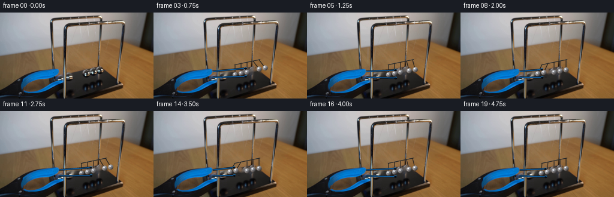
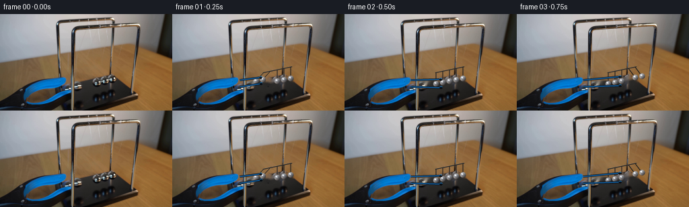

CODING AGENTS AS PIXEL WORLD MODELS
traex/DeepSeek-V4.1-Flash · 0052
点击播放 · 原生 RGB 像素
逐轮保存的候选
回放视频、检查图与代码变化。
每份候选均可单独播放。实际图片检查记录在下方工具轨迹中。
候选 01播放与检查图
点击播放 · 原生 RGB 像素

展开代码变化
--- 上一保存版本
+++ 本次保存版本
@@ -0,0 +1,270 @@
+from pathlib import Path
+import math
+
+import cv2
+import numpy as np
+from PIL import Image, ImageDraw, ImageFilter
+
+import artifact_io
+
+
+CASE_DIR = Path(__file__).resolve().parent
+WIDTH, HEIGHT = 256, 144
+N_FRAMES = 20
+FPS = 4
+SS = 4
+
+
+def build_clean_plate(frame):
+ """Remove only the ball band, preserving the photographed frame and table."""
+ mask = np.zeros((HEIGHT, WIDTH), np.uint8)
+
+ # The five resting positions follow the shallow perspective line in the frame.
+ rest = resting_centers()
+ for cx, cy in rest:
+ cv2.ellipse(mask, (int(round(cx)), int(round(cy))), (6, 7), 0, 0, 360, 255, -1)
+
+ # The two held spheres sit together at the left amplitude.
+ for cx, cy in held_centers(-0.91):
+ cv2.ellipse(mask, (int(round(cx)), int(round(cy))), (6, 7), 0, 0, 360, 255, -1)
+
+ # Include the narrow reflections and jaw tips around the held pair.
+ cv2.ellipse(mask, (129, 98), (15, 10), 0, 0, 360, 255, -1)
+ clean = cv2.inpaint(frame, mask, 4, cv2.INPAINT_TELEA)
+
+ # Suppress tiny inpainting speckle without changing the surrounding photograph.
+ blur = cv2.GaussianBlur(clean, (0, 0), 0.55)
+ soft = mask.astype(np.float32) / 255.0
+ soft = cv2.GaussianBlur(soft, (0, 0), 0.7)[..., None]
+ return np.clip(clean * (1.0 - 0.28 * soft) + blur * (0.28 * soft), 0, 255).astype(np.uint8)
+
+
+def resting_centers():
+ return [(136.0 + 10.0 * i, 104.0 - 2.0 * i) for i in range(5)]
+
+
+def pivots():
+ return [(136.0 + 10.0 * i, 87.0 - 2.0 * i) for i in range(5)]
+
+
+def held_centers(angle):
+ result = []
+ for px, py in pivots()[:2]:
+ length = 17.0
+ result.append((px + length * math.sin(angle), py + length * math.cos(angle)))
+ return result
+
+
+def pendulum_state(t):
+ """Return the two active ball indices and their angle.
+
+ The initial two-ball swing reaches the row at t=0.48. Momentum then
+ alternates between the two-ball groups, with gentle energy loss.
+ """
+ release = 0.08
+ quarter = 0.42
+ amplitude = 0.91
+ damping = 0.88
+
+ if t < release:
+ return (0, 1), -amplitude, 0.0
+
+ dt = t - release
+ if dt < quarter:
+ u = dt / quarter
+ angle = -amplitude * math.cos(0.5 * math.pi * u)
+ return (0, 1), angle, 0.0
+
+ dt -= quarter
+ transfer = 0
+ while True:
+ amp = amplitude * (damping ** (transfer + 1))
+ if dt < 2.0 * quarter:
+ u = dt / (2.0 * quarter)
+ angle = amp * math.sin(math.pi * u)
+ if transfer % 2 == 0:
+ return (3, 4), angle, dt
+ return (0, 1), -angle, dt
+ dt -= 2.0 * quarter
+ transfer += 1
+
+
+def ball_centers(t):
+ centers = resting_centers()
+ active, angle, _ = pendulum_state(t)
+ if abs(angle) < 1e-5:
+ return centers, active
+
+ for index in active:
+ px, py = pivots()[index]
+ length = 17.0
+ centers[index] = (
+ px + length * math.sin(angle),
+ py + length * math.cos(angle),
+ )
+ return centers, active
+
+
+def draw_line_hi(draw, points, fill, width):
+ ImageDraw.Draw(draw).line(points, fill=fill, width=width, joint="curve")
+
+
+def draw_ball_hi(image, cx, cy, radius, bright=1.0):
+ x0, y0 = int(round((cx - radius - 3) * SS)), int(round((cy - radius - 3) * SS))
+ x1, y1 = int(round((cx + radius + 3) * SS)), int(round((cy + radius + 3) * SS))
+ if x1 <= x0 or y1 <= y0:
+ return
+
+ yy, xx = np.mgrid[y0:y1, x0:x1].astype(np.float32)
+ px = xx / SS
+ py = yy / SS
+ dx = px - cx
+ dy = py - cy
+ dist = np.sqrt(dx * dx + dy * dy)
+ r = max(radius, 0.1)
+
+ # Soft contact shadow, biased toward the table below the sphere.
+ shadow = np.exp(-(((dx + 0.7) / (r * 1.15)) ** 2 + ((dy - 1.7) / (r * 0.55)) ** 2) * 2.2)
+ shadow *= (dist < r * 1.8).astype(np.float32)
+ rgba = np.zeros((y1 - y0, x1 - x0, 4), np.float32)
+ rgba[..., 0] = 8.0
+ rgba[..., 1] = 9.0
+ rgba[..., 2] = 10.0
+ rgba[..., 3] = shadow * 78.0
+
+ sphere = dist <= r
+ edge = np.clip((r - dist) / 0.7, 0.0, 1.0)
+ ndx, ndy = dx / r, dy / r
+ light = np.clip(0.68 - 0.55 * ndx - 0.58 * ndy, 0.0, 1.0)
+ rim = np.clip((dist / r) ** 2.4, 0.0, 1.0)
+ base = 38.0 + 105.0 * light + 20.0 * (1.0 - rim)
+
+ # Cool neutral steel with a warm table reflection at the lower edge.
+ warm = np.clip(ndy, 0.0, 1.0) * 16.0
+ red = base * bright + warm + 5.0
+ green = base * bright + warm * 0.55 + 6.0
+ blue = base * bright + warm * 0.18 + 10.0
+
+ spec = np.exp(-(((dx + 0.30 * r) / (0.34 * r)) ** 2 +
+ ((dy + 0.35 * r) / (0.28 * r)) ** 2) * 2.0)
+ spec2 = np.exp(-(((dx + 0.08 * r) / (0.12 * r)) ** 2 +
+ ((dy + 0.12 * r) / (0.11 * r)) ** 2) * 1.5)
+ red += 132.0 * spec + 165.0 * spec2
+ green += 139.0 * spec + 168.0 * spec2
+ blue += 146.0 * spec + 170.0 * spec2
+
+ lower_reflection = np.exp(-((dy - 0.55 * r) / (0.20 * r)) ** 2) * np.clip(-ndx, 0, 1)
+ red += 24.0 * lower_reflection
+ green += 12.0 * lower_reflection
+
+ rgba[..., 0] = np.where(sphere, red, rgba[..., 0])
+ rgba[..., 1] = np.where(sphere, green, rgba[..., 1])
+ rgba[..., 2] = np.where(sphere, blue, rgba[..., 2])
+ rgba[..., 3] = np.maximum(rgba[..., 3], sphere.astype(np.float32) * edge * 255.0)
+
+ patch = Image.fromarray(np.clip(rgba, 0, 255).astype(np.uint8), "RGBA")
+ image.alpha_composite(patch, (x0, y0))
+
+
+def draw_gripper_hi(image, t, held):
+ release = 0.08
+ progress = np.clip((t - release) / 0.65, 0.0, 1.0)
+ opening = 1.0 - (1.0 - progress) ** 2
+ retract = 4.5 * (1.0 - (1.0 - progress) ** 3)
+
+ tip_x = held[1][0] - 3.0
+ tip_y = held[1][1] + 1.5
+ base_x = 103.0 - retract
+ upper_base = (base_x, 98.5)
+ lower_base = (base_x, 108.5)
+ upper_tip = (tip_x, tip_y - 2.6 - 4.0 * opening)
+ lower_tip = (tip_x + 0.5, tip_y + 2.8 + 4.0 * opening)
+
+ def q(point):
+ return (point[0] * SS, point[1] * SS)
+
+ # A dark jaw core with a cool blue edge, matching the tool in the frame.
+ for width, color in [(3.2, (5, 14, 25, 235)), (1.65, (17, 95, 160, 245))]:
+ draw_line_hi(image, [q(upper_base), q(upper_tip)], color, int(round(width * SS)))
+ draw_line_hi(image, [q(lower_base), q(lower_tip)], color, int(round(width * SS)))
+
+ # Small jaw pads read as the last points of contact before release.
+ pad_r = 2.1 * SS
+ draw = ImageDraw.Draw(image)
+ for tip in (upper_tip, lower_tip):
+ x, y = q(tip)
+ draw.ellipse((x - pad_r, y - pad_r, x + pad_r, y + pad_r),
+ fill=(4, 11, 19, 235))
+ draw.arc((x - pad_r, y - pad_r, x + pad_r, y + pad_r),
+ 200, 345, fill=(31, 118, 184, 230), width=SS)
+
+
+def render_overlay(t):
+ layer = Image.new("RGBA", (WIDTH * SS, HEIGHT * SS), (0, 0, 0, 0))
+ centers, active = ball_centers(t)
+ held = held_centers(pendulum_state(t)[1] if t < 0.08 else pendulum_state(t)[1])
+
+ # Thin suspension wires, drawn twice for a dark core and a lit edge.
+ for (px, py), (cx, cy) in zip(pivots(), centers):
+ a = (px * SS, py * SS)
+ b = (cx * SS, cy * SS)
+ draw_line_hi(layer, [a, b], (16, 17, 18, 220), int(1.25 * SS))
+ draw_line_hi(layer, [(a[0] + 0.55 * SS, a[1]), (b[0] + 0.55 * SS, b[1])],
+ (112, 117, 122, 160), max(1, int(0.42 * SS)))
+
+ # The upper rail is a narrow, cool-metal strip over the original support.
+ draw_line_hi(layer, [(135.0 * SS, 87.3 * SS), (178.0 * SS, 78.3 * SS)],
+ (21, 24, 27, 235), int(1.7 * SS))
+ draw_line_hi(layer, [(135.0 * SS, 86.8 * SS), (178.0 * SS, 77.8 * SS)],
+ (128, 132, 136, 185), max(1, int(0.65 * SS)))
+
+ # Draw back-to-front along the shallow depth of the row.
+ for i in reversed(range(5)):
+ cx, cy = centers[i]
+ bright = 1.0 if i in active else 0.94
+ draw_ball_hi(layer, cx, cy, 4.65, bright)
+
+ # The gripper tips stay in contact until the release, then open and retract.
+ draw_gripper_hi(layer, t, held)
+
+ return layer.resize((WIDTH, HEIGHT), Image.Resampling.LANCZOS)
+
+
+def make_frames():
+ original = np.asarray(Image.open(CASE_DIR / "first_frame.png").convert("RGB"), dtype=np.uint8)
+ clean = build_clean_plate(original)
+ base = Image.fromarray(clean).convert("RGBA")
+ frames = [original.copy()]
+
+ for index in range(1, N_FRAMES):
+ t = index / FPS
+ overlay = render_overlay(t)
+ frame = base.copy()
+ frame.alpha_composite(overlay)
+ frames.append(np.asarray(frame.convert("RGB"), dtype=np.uint8))
+
+ # Enforce the contract independently of drawing code.
+ frames[0] = original.copy()
+ return np.stack(frames)
+
+
+def main():
+ frames = make_frames()
+ artifact_io.save(frames, CASE_DIR)
+
+ video_path = CASE_DIR / "newton_cradle_rgb.mp4"
+ import subprocess
+
+ subprocess.run(
+ [
+ "ffmpeg", "-y", "-loglevel", "error",
+ "-framerate", str(FPS), "-i", str(CASE_DIR / "frames" / "%02d.png"),
+ "-c:v", "libx264", "-pix_fmt", "yuv420p", "-crf", "14",
+ "-movflags", "+faststart", str(video_path),
+ ],
+ check=True,
+ )
+
+
+if __name__ == "__main__":
+ main()
候选 02播放与检查图
点击播放 · 原生 RGB 像素


展开代码变化
--- 上一保存版本
+++ 本次保存版本
@@ -162,7 +162,7 @@
rgba[..., 2] = np.where(sphere, blue, rgba[..., 2])
rgba[..., 3] = np.maximum(rgba[..., 3], sphere.astype(np.float32) * edge * 255.0)
- patch = Image.fromarray(np.clip(rgba, 0, 255).astype(np.uint8), "RGBA")
+ patch = Image.fromarray(np.clip(rgba, 0, 255).astype(np.uint8))
image.alpha_composite(patch, (x0, y0))
@@ -253,17 +253,17 @@
artifact_io.save(frames, CASE_DIR)
video_path = CASE_DIR / "newton_cradle_rgb.mp4"
- import subprocess
-
- subprocess.run(
- [
- "ffmpeg", "-y", "-loglevel", "error",
- "-framerate", str(FPS), "-i", str(CASE_DIR / "frames" / "%02d.png"),
- "-c:v", "libx264", "-pix_fmt", "yuv420p", "-crf", "14",
- "-movflags", "+faststart", str(video_path),
- ],
- check=True,
+ writer = cv2.VideoWriter(
+ str(video_path),
+ cv2.VideoWriter_fourcc(*"mp4v"),
+ float(FPS),
+ (WIDTH, HEIGHT),
)
+ if not writer.isOpened():
+ raise RuntimeError("OpenCV MP4 writer is unavailable")
+ for frame in frames:
+ writer.write(cv2.cvtColor(frame, cv2.COLOR_RGB2BGR))
+ writer.release()
if __name__ == "__main__":
可观测工具轨迹
实际执行的命令与返回图片。
命令 1exit 0
/bin/bash -c "sed -n '1,240p' prompt.txt"
命令 2exit 0
/bin/bash -c "pwd && rg --files -g '"'!*.mp4'"' -g '"'!*.mov'"' | sort"
命令 3exit 0
/bin/bash -c "sed -n '1,280p' GENERATION_RULES.md"
命令 4exit 0
/bin/bash -c 'file first_frame.png 2>/dev/null; identify first_frame.png 2>/dev/null || true; ffprobe -v error -show_entries stream=width,height,pix_fmt -of default=noprint_wrappers=1 first_frame.png 2>/dev/null || true'
命令 5exit 0
/bin/bash -c "sed -n '1,260p' artifact_io.py"
命令 6exit 0
/bin/bash -c "sed -n '1,260p' player_template.html"
命令 7exit 0
/bin/bash -c "python - <<'PY'
from PIL import Image
import numpy as np
im=Image.open('first_frame.png').convert('RGB')
a=np.asarray(im)
print(im.size, a.shape, a.dtype)
print('range', a.min(axis=(0,1)), a.max(axis=(0,1)), 'mean', a.mean(axis=(0,1)))
# coarse 16x9 grid mean RGB
h,w,_=a.shape
for gy in range(9):
row=[]
for gx in range(16):
p=a[gy*h//9:(gy+1)*h//9,gx*w//16:(gx+1)*w//16].mean(axis=(0,1)).astype(int)
row.append('%02x%02x%02x'%tuple(p))
print(' '.join(row))
PY"命令 8exit 0
/bin/bash -c "python - <<'PY'
from PIL import Image
import numpy as np
from scipy import ndimage
im=np.array(Image.open('first_frame.png').convert('RGB')).astype(float)
r,g,b=im.transpose(2,0,1)
mx=im.max(2); mn=im.min(2); sat=(mx-mn)/(mx+1e-6)
# masks likely saturated blue/cyan: b exceeds r by 15, maybe dark blue
for name,m in [
('blue_gt_red15',(b-r>15)&(b>40)),
('blue_gt_red30',(b-r>30)&(b>35)),
('cyan_sat',(b>g*1.05)&(g>r*1.15)&(sat>.2)),
('dark',(mx<75)),
('bright',(mx>180)),
('metallic_bright_low_sat',(mx>100)&(sat<.12)),
]:
lab,n=ndimage.label(m)
sizes=ndimage.sum(m,lab,range(1,n+1))
idx=np.argsort(sizes)[-15:][::-1]
print('\\n',name,'pixels',m.sum(),'components',n)
for j in idx[:12]:
if sizes[j]<5: continue
ys,xs=np.where(lab==j+1)
print(' ',int(sizes[j]),(xs.min(),ys.min(),xs.max(),ys.max()),'cent',round(xs.mean(),1),round(ys.mean(),1),'rgb',im[ys,xs].mean(0).round().astype(int).tolist())
PY"命令 9exit 0
/bin/bash -c "python - <<'PY'
from PIL import Image
import numpy as np
im=np.array(Image.open('first_frame.png').convert('RGB'))
# 2x2 block map, classify by mean hue/luma
for y in range(0,144,2):
s=''
for x in range(0,256,2):
p=im[y:y+2,x:x+2].reshape(-1,3).mean(0); r,g,b=p; mx=max(p); mn=min(p); sat=(mx-mn)/(mx+1)
if b-r>35 and b>70: c='B' # blue
elif b>r+12 and b>40: c='b'
elif mx<35: c='#'
elif mx<70: c='d'
elif mx>190 and sat<.18: c='W'
elif mx>145 and sat<.18: c='O'
elif r>g*1.12 and g>b*1.05: c='t' if mx<140 else 'T' # table brown
elif mx>110: c='.'
else: c=','
s+=c
print(s)
PY"命令 10exit 0
/bin/bash -c "python - <<'PY'
from PIL import Image
import numpy as np
from scipy import ndimage
im=np.array(Image.open('first_frame.png').convert('RGB')).astype(float)
gray=im.mean(2)
# detail map using local gradients + color distance, 1 char per 2x2
sm=ndimage.gaussian_filter(gray, .6)
gx=ndimage.sobel(sm,1); gy=ndimage.sobel(sm,0); gm=np.hypot(gx,gy)
for y in range(0,144,2):
s=''
for x in range(0,256,2):
v=gm[y:y+2,x:x+2].mean(); p=im[y:y+2,x:x+2].reshape(-1,3).mean(0); mx=p.max(); mn=p.min()
if v>180: c='@'
elif v>110: c='#'
elif v>65: c='*'
elif v>38: c='+'
elif v>20: c='-'
elif mx>180: c='W'
elif mx>120: c='o'
elif mx>70: c='.'
elif mx>35: c=','
else: c=' '
s+=c
print(s)
PY"命令 11exit 0
/bin/bash -c "python - <<'PY'
from PIL import Image
import numpy as np
im=np.array(Image.open('first_frame.png').convert('RGB'))
# crop windows dump as grayscale glyph density / colors. Focus metal ball region x105..170 y55..125
chars=' .:-=+*#%@'
# make local contrast per region
for y0,y1,x0,x1,name in [(85,130,120,180,'cradle?'),(95,140,25,115,'gripper'),(55,110,120,180,'balls?')]:
print('\\n###',name)
cr=im[y0:y1,x0:x1]
for y in range(0,cr.shape[0],2):
s=''
for x in range(0,cr.shape[1],2):
p=cr[y:y+2,x:x+2].reshape(-1,3).mean(0); r,g,b=p
# colored semantic first
if b-r>35 and b>70: c='B'
elif r>g*1.08 and g>b*1.05: c='t'
elif max(p)<40:c='K'
elif max(p)<75:c='k'
else:
lum=.299*r+.587*g+.114*b
idx=min(9,max(0,int(lum/256*10)))
c=chars[idx]
s+=c
print(s)
PY"命令 12exit 0
/bin/bash -c "python - <<'PY'
from PIL import Image
import numpy as np
im=np.array(Image.open('first_frame.png').convert('RGB'))
# print exact rgb points on a grid in suspected cradle x130..180 y80..135
for y in range(80,136,4):
print('y',y,end=' ')
for x in range(120,185,4):
print('%02x%02x%02x'%tuple(im[y,x]),end=' ')
print()
PY"命令 13exit 0
/bin/bash -c "python - <<'PY'
from PIL import Image
import numpy as np
im=np.array(Image.open('first_frame.png').convert('RGB')).astype(np.float32)
# make several crops as ANSI truecolor blocks, each output pixel = 2x4 image pixels (background via upper/lower half blocks?)
# simply emit sixel impossible. Use ppm intermediate and ascii from luminance after equalizing crop
for (x0,y0,x1,y1,name) in [(90,60,210,140,'cradle'),(0,0,256,90,'top'),(100,0,180,70,'cradle-top')]:
cr=im[y0:y1,x0:x1]
# equalize lum
lum=.299*cr[:,:,0]+.587*cr[:,:,1]+.114*cr[:,:,2]
lo,hi=np.percentile(lum,[1,99]); n=np.clip((lum-lo)/(hi-lo),0,1)
chars=' .:-=+*#%@'
print('\\n###',name,x0,y0,x1,y1)
# blocks 2x2 and average after norm
for yy in range(0,cr.shape[0]-1,2):
s=''
for xx in range(0,cr.shape[1]-1,2):
v=n[yy:yy+2,xx:xx+2].mean()
s+=chars[min(9,int(v*10))]
print(s)
PY"命令 14exit 0
/bin/bash -c "python - <<'PY'
from PIL import Image
import numpy as np
im=np.array(Image.open('first_frame.png').convert('RGB'))
# print class map 1 char per pixel? crop x120-180 y70-140 with single char every pixel perhaps 60x70 too much. do every 1 x, 2 y, classification semantic.
for y in range(70,142,2):
s=''
for x in range(110,190):
p=im[y,x].astype(int); r,g,b=p
mx=max(p); mn=min(p); sat=(mx-mn)/(mx+1)
if b-r>30 and b>60: c='B'
elif b-r>12 and b>30: c='b'
elif r>g*1.10 and g>b*1.02: c='t' if mx<150 else 'T'
elif mx<25:c=' '
elif mx<45:c='.'
elif mx<70:c=','
elif mx<95:c=':'
elif mx<120:c='-'
elif mx<150:c='+'
elif mx<180:c='*'
elif mx<215:c='#'
else:c='@'
s+=c
print('%3d '%y+s)
PY"命令 15exit 0
/bin/bash -c "python - <<'PY'
from PIL import Image
import numpy as np
im=np.array(Image.open('first_frame.png').convert('RGB')).astype(float)
lum=.299*im[:,:,0]+.587*im[:,:,1]+.114*im[:,:,2]
chars=' .:-=+*#%@'
# local map x125..195 y75..130, 1 char each pixel, brightness relative absolute
for y in range(75,131):
s=''
for x in range(125,196):
v=lum[y,x]; idx=min(9,max(0,int(v/256*10))); s+=chars[idx]
print('%3d'%y,s)
PY"命令 16exit 0
/bin/bash -c "python - <<'PY'
import cv2, numpy as np
im=cv2.imread('first_frame.png')
g=cv2.cvtColor(im,cv2.COLOR_BGR2GRAY)
for p1,p2 in [(30,12),(50,20),(80,30),(100,40)]:
circles=cv2.HoughCircles(g,cv2.HOUGH_GRADIENT,dp=1,minDist=5,param1=p1,param2=p2,minRadius=2,maxRadius=20)
print('params',p1,p2)
if circles is not None:
cs=np.round(circles[0],2)
print(cs[np.lexsort((cs[:,0],cs[:,1]))])
PY"命令 17exit 0
/bin/bash -c "python - <<'PY'
from PIL import Image
import numpy as np
im=np.array(Image.open('first_frame.png').convert('RGB')).astype(np.float32)
# classification mask excluding background table: metallic = low saturation and significant brightness
r,g,b=im.transpose(2,0,1); mx=im.max(2); mn=im.min(2); sat=(mx-mn)/(mx+1)
# Use local high freq? print x 100..230 y 85..140 with metallic/ball markers
for y in range(85,141):
s=''
for x in range(100,231):
p=im[y,x]; lum=.299*p[0]+.587*p[1]+.114*p[2]; sat=(max(p)-min(p))/(max(p)+1)
if sat<.10 and lum>150: c='@'
elif sat<.13 and lum>110: c='O'
elif sat<.18 and lum>80: c='o'
elif max(p)<30: c=' '
elif max(p)<50: c='.'
elif max(p)<80: c=','
elif max(p)<110: c=':'
elif max(p)<145: c='-'
elif max(p)<180: c='+'
elif max(p)<215: c='*'
else: c='#'
s+=c
print('%3d'%y,s)
PY"命令 18exit 0
/bin/bash -c "python - <<'PY'
from PIL import Image
import numpy as np
im=np.array(Image.open('first_frame.png').convert('RGB'))
# map 2px block x115..185 y88..138 with each block's rgb distance from surrounding brown table
# Identify foreground using dark/blue/neutral cool tones. Print dominant hue char and exact mean lum
for y in range(88,138,2):
print('y%3d'%y,end=' ')
for x in range(112,188,2):
p=im[y:y+2,x:x+2].reshape(-1,3).mean(0); r,g,b=p; mx=p.max(); mn=p.min(); sat=(mx-mn)/(mx+1); lum=.299*r+.587*g+.114*b
if b-r>25 and b>55: c='B'
elif lum<25:c='K'
elif lum<45:c='k'
elif lum<65:c='d'
elif lum<85:c='.'
elif lum<110:c='o'
elif lum<140:c='O'
elif lum<175:c='+'
elif lum<210:c='*'
else:c='#'
print(c,end='')
print()
PY"命令 19exit 0
/bin/bash -c "python - <<'PY'
from PIL import Image
import numpy as np
im=np.array(Image.open('first_frame.png').convert('L')).astype(float)
# braille: each 2x4 cell, threshold patterns at adaptive local levels
# braille bit map: x/y offsets -> dots
bits={(0,0):1,(0,1):2,(0,2):4,(0,3):64,(1,0):8,(1,1):16,(1,2):32,(1,3):128}
def braille(cr,th):
out=[]
for y in range(0,cr.shape[0]-3,4):
s=''
for x in range(0,cr.shape[1]-1,2):
v=0
for (dx,dy),b in bits.items():
if cr[y+dy,x+dx]>th:v+=b
s+=chr(0x2800+v)
out.append(s)
return '\\n'.join(out)
for name,(x0,y0,x1,y1) in {'full':(0,0,256,144),'cradle':(100,75,200,140),'grip':(0,75,120,144)}.items():
cr=im[y0:y1,x0:x1]
print('\\n###',name)
# adaptive thresholds from percentiles
for p in [60,75,88]:
th=np.percentile(cr,p)
print('p',p,'th',round(th,1))
print(braille(cr,th))
PY"命令 20exit 0
/bin/bash -c "python - <<'PY'
import cv2, numpy as np
im=cv2.imread('first_frame.png')
g=cv2.cvtColor(im,cv2.COLOR_BGR2GRAY)
# crop region x110:205 y85:140
crop=g[82:142,105:210]
for blur in [0,1,2]:
gg=cv2.GaussianBlur(crop,(3,3),0) if blur else crop
for p2 in [8,10,12,14,16,18,20]:
cs=cv2.HoughCircles(gg,cv2.HOUGH_GRADIENT,dp=1,minDist=7,param1=35,param2=p2,minRadius=3,maxRadius=10)
print('blur',blur,'p2',p2,end=': ')
if cs is None: print('-'); continue
cs=np.round(cs[0],1)
print([(round(x+105,1),round(y+82,1),r) for x,y,r in cs])
PY"命令 21exit 0
/bin/bash -c "python - <<'PY'
from PIL import Image
import numpy as np
from sklearn.cluster import KMeans
im=np.array(Image.open('first_frame.png').convert('RGB'))
a=im.reshape(-1,3)
km=KMeans(n_clusters=12, random_state=0, n_init=5).fit(a[::4])
cent=km.cluster_centers_.round().astype(int)
lbl=km.predict(a).reshape(144,256)
for i,c in enumerate(cent):
m=lbl==i
ys,xs=np.where(m)
print(i, m.sum(), c.tolist(), 'bbox', (xs.min(),ys.min(),xs.max(),ys.max()), 'centroid', (round(xs.mean(),1),round(ys.mean(),1)))
# bbox per y quartile maybe
PY"命令 22exit 0
/bin/bash -c "python - <<'PY'
from PIL import Image
import numpy as np
im=np.array(Image.open('first_frame.png').convert('RGB')).astype(float)
# output semantic block map 4x4 px, 64x36, with categories ordered by hue/brightness
for y in range(0,144,4):
s=''
for x in range(0,256,4):
p=im[y:y+4,x:x+4].reshape(-1,3).mean(0); r,g,b=p; mx=max(p); mn=min(p); sat=(mx-mn)/(mx+1); lum=.299*r+.587*g+.114*b
if b-r>30 and b>60: c='B'
elif b-r>12 and b>35: c='b'
elif lum<25: c=' '
elif lum<45: c='.'
elif lum<65: c=','
elif lum<85: c=':'
elif lum<110: c='-'
elif lum<140: c='+'
elif lum<175: c='o'
elif lum<210: c='O'
elif lum<235: c='*'
else:c='#'
s+=c
print('%3d'%y,s)
PY"命令 23exit 0
/bin/bash -c "python - <<'PY'
from PIL import Image
import numpy as np
im=np.array(Image.open('first_frame.png').convert('RGB')).astype(float)
# Analyze expected Newton cradle region: x 130..200 y 92..135. list rows with segments by brightness and color
for y in range(90,136):
row=im[y,120:210]
lum=row@np.array([.299,.587,.114])
# print run length segments of lum bins
bins=np.clip((lum//20).astype(int),0,12)
seg=[]; st=0
for i in range(1,len(bins)+1):
if i==len(bins) or bins[i]"'!=bins[st]:
if i-st>=2: seg.append((120+st,120+i-1,int(bins[st]*20)))
st=i
print(y,seg)
PY'命令 24exit 0
/bin/bash -c "python - <<'PY'
from PIL import Image
import numpy as np
im=np.array(Image.open('first_frame.png').convert('RGB')).astype(int)
# map x=115..215 y=88..140, each pixel classified as dark (D), table base (.), metal (M), shadow (s), blue(B)
# characterize via ratio. Print at full x every char; use dark metal contrast
for y in range(88,141):
s=''
for x in range(115,216):
r,g,b=im[y,x]; lum=.299*r+.587*g+.114*b; sat=(max(r,g,b)-min(r,g,b))/(max(r,g,b)+1)
if b-r>25 and b>60:c='B'
elif lum<16:c='X'
elif lum<28:c='D'
elif lum<45:c='d'
elif lum<60:c='s'
elif lum<80:c='.'
elif sat<.10 and lum>145:c='M'
elif sat<.15 and lum>110:c='m'
elif lum<110:c=','
elif lum<140:c=':'
elif lum<170:c='o'
elif lum<205:c='O'
else:c='#'
s+=c
print('%3d'%y,s)
PY"命令 25exit 0
/bin/bash -c "python - <<'PY'
from PIL import Image
import numpy as np
im=np.array(Image.open('first_frame.png').convert('RGB')).astype(float)
# dump RGB/lum along likely ball line y=102 x135-195 and vertical x150 y90-130
for y in [95,98,100,102,104,106,110,115,120,125]:
print('\\ny',y)
for x in range(135,196):
r,g,b=im[y,x]; print('%3d:%3d,%3d,%3d'% (x,r,g,b),end=' ')
if (x-134)%5==0:print()
PY"命令 26exit 0
/bin/bash -c "python - <<'PY'
from PIL import Image
import numpy as np
im=np.array(Image.open('first_frame.png').convert('RGB'))
# Render a unicode half-block ANSI-like? use truecolor terminal escape, tool output maybe rendered text not visual.
# Instead build edge crop and save enlarged nearest for potential use via numeric metrics only.
# Print key points in region of supposed balls based on highlights.
for y in range(88,112):
xs=[]
for x in range(130,180):
p=im[y,x]; lum=p@np.array([.299,.587,.114]); sat=(p.max()-p.min())/(p.max()+1)
if lum>150 and sat<.3: xs.append(x)
if xs: print(y, min(xs), max(xs), xs)
PY"命令 27exit 0
/bin/bash -c "python - <<'PY'
from PIL import Image
import numpy as np
im=np.array(Image.open('first_frame.png').convert('RGB')).astype(float)
# characterize local dark objects in region. Dark mask, components but restrict y>88
r,g,b=im.transpose(2,0,1); lum=.299*r+.587*g+.114*b
for th in [18,25,32,40,50,60]:
m=(lum<th); m[:88]=False; m[:, :120]=False
# label 8 conn
from scipy import ndimage
lab,n=ndimage.label(m,structure=np.ones((3,3)))
sizes=ndimage.sum(m,lab,range(1,n+1))
print('\\nth',th,'n',n)
for j in np.argsort(sizes)[-20:][::-1]:
if sizes[j]<8:continue
ys,xs=np.where(lab==j+1)
print(int(sizes[j]),(xs.min(),ys.min(),xs.max(),ys.max()), 'cent',round(xs.mean(),1),round(ys.mean(),1))
PY"命令 28exit 0
/bin/bash -c "python - <<'PY'
from PIL import Image
import numpy as np
im=np.array(Image.open('first_frame.png').convert('RGB')).astype(float)
# blocks 1px x 2px => aspect square, semantic with lum. crop x125-205 y85-140. print 2 chars per pixel? no.
for y in range(85,141,2):
s=''
for x in range(125,206):
p=im[y:y+2,x].mean(0); r,g,b=p; lum=.299*r+.587*g+.114*b; sat=(max(p)-min(p))/(max(p)+1)
if b-r>25 and b>55:c='B'
elif lum<18:c='@'
elif lum<32:c='#'
elif lum<48:c='O'
elif lum<65:c='o'
elif lum<85:c='*'
elif lum<110:c='+'
elif lum<140:c='-'
elif lum<175:c=':'
elif lum<210:c='.'
else:c=' '
s+=c
print('%3d'%y,s)
PY"命令 29exit 0
/bin/bash -c "python - <<'PY'
from PIL import Image
import numpy as np
im=np.array(Image.open('first_frame.png').convert('RGB')).astype(float)
# sample grid values around x130..180 y88..115 in HSV semantics
import cv2
hsv=cv2.cvtColor(im.astype(np.uint8),cv2.COLOR_RGB2HSV)
for y in range(88,116):
print('y',y,end=' ')
for x in range(130,181,2):
H,S,V=hsv[y,x]
if V<50: c='K'
elif S<35 and V>150:c='W'
elif H<15 or H>170:c='r'
elif H<35:c='o'
elif H<70:c='y'
elif H<110:c='g'
elif H<140:c='c'
elif H<165:c='b'
else:c='p'
print(f'{c}{V:02x}',end=' ')
print()
PY"命令 30exit 0
/bin/bash -c "python - <<'PY'
from PIL import Image
import numpy as np
im=np.array(Image.open('first_frame.png').convert('RGB')).astype(float)
# print crop region x138..176 y92..110 in exact luminance as decimal per pixel
for y in range(92,111):
print('%3d'%y,end=' ')
for x in range(138,177):
lum=im[y,x]@np.array([.299,.587,.114])
print('%3d'%round(lum),end='')
print()
PY"命令 31exit 0
/bin/bash -c "python - <<'PY'
from PIL import Image
import numpy as np
im=np.array(Image.open('first_frame.png').convert('RGB'))
# Print positions of local maxima in luminance around object region; threshold >130, local max 3x3
from scipy.ndimage import maximum_filter
g=im@np.array([.299,.587,.114])
loc=(g==maximum_filter(g,size=3))&(g>130)
ys,xs=np.where(loc & (np.indices(g.shape)[0]>88) & (np.indices(g.shape)[0]<130) & (np.indices(g.shape)[1]>120) & (np.indices(g.shape)[1]<205))
for y,x in zip(ys,xs): print(x,y,round(g[y,x]),im[y,x].tolist())
PY"命令 32exit 0
/bin/bash -c "python - <<'PY'
from PIL import Image
import numpy as np
im=np.array(Image.open('first_frame.png').convert('RGB')).astype(float)
# summary of color/luma per object candidate bounding region by row
for box in [(120,88,180,112),(130,96,180,130),(140,100,175,125),(120,100,205,140),(30,90,110,140)]:
x0,y0,x1,y1=box; cr=im[y0:y1,x0:x1]; g=cr@np.array([.299,.587,.114])
print('\\nbox',box,'lum',np.percentile(g,[0,10,25,50,75,90,100]).round(1),'mean',g.mean().round(1),'rgb',cr.mean((0,1)).round(1))
# brightest 20 points
flat=np.argsort(g.ravel())[-20:][::-1]
for idx in flat[:10]:
yy,xx=divmod(idx,cr.shape[1]); print((x0+xx,y0+yy),round(g[yy,xx]),cr[yy,xx].astype(int).tolist(),end='; ')
print()
PY"命令 33exit 0
/bin/bash -c "python - <<'PY'
from PIL import Image
import numpy as np
im=np.array(Image.open('first_frame.png').convert('RGB')).astype(float)
# Determine local dark shape on x120..180 y92..140. Edge map Sobel and print threshold ascii at native-ish 1x2
from scipy import ndimage
g=im@np.array([.299,.587,.114])
# remove large scale for detail
bg=ndimage.gaussian_filter(g,5); d=g-bg
for y in range(88,136,2):
s=''
for x in range(115,206):
v=d[y:y+2,x].mean()
if v>40:c='@'
elif v>25:c='#'
elif v>12:c='*'
elif v>5:c='+'
elif v<-25:c='B'
elif v<-12:c='b'
elif v<-5:c='-'
else:c='.'
s+=c
print('%3d'%y,s)
PY"命令 34exit 0
/bin/bash -c "python - <<'PY'
from PIL import Image
import numpy as np
im=np.array(Image.open('first_frame.png').convert('RGB')).astype(float)
# local minima of luminance with nonmax suppression in x120..210 y85..140
from scipy import ndimage
g=im@np.array([.299,.587,.114])
for r in [2,3,4,5,6]:
mn=ndimage.minimum_filter(g,size=2*r+1)
loc=(g==mn)&(g<35)
yy,xx=np.where(loc & (np.indices(g.shape)[0]>=85)&(np.indices(g.shape)[0]<140)&(np.indices(g.shape)[1]>=120)&(np.indices(g.shape)[1]<210))
print('r',r,[(int(x),int(y),round(g[y,x],1)) for y,x in zip(yy,xx)])
PY"命令 35exit 0
/bin/bash -c "python - <<'PY'
from PIL import Image
import numpy as np
im=np.array(Image.open('first_frame.png').convert('RGB')).astype(float)
# rgb at key bright spots
for y,x in [(95,170),(97,140),(98,159),(99,154),(101,147),(102,142),(104,148),(105,142),(97,165)]:
print(x,y,im[y,x].astype(int).tolist())
# For each, 7x7 brightness ascii and rgb means
chars=' .:-=+*#%@'
for y,x in [(95,170),(97,140),(98,159),(99,154),(101,147),(102,142),(104,148),(105,142)]:
print('\\n',x,y)
cr=im[y-3:y+4,x-3:x+4]; g=cr@np.array([.299,.587,.114])
for row in g:
print(''.join(chars[min(9,int(v/256*10))] for v in row))
PY"命令 36exit 0
/bin/bash -c "python - <<'PY'
from PIL import Image
import numpy as np
im=np.array(Image.open('first_frame.png').convert('RGB'))
# analyze pure dark background at bottom. Determine floor table colors at selected points
for y in [100,110,120,130,140]:
print('y',y,[(x,im[y,x].tolist()) for x in [0,20,40,80,120,160,200,240,255]])
# Find background plate boundary likely x~195 vertical line. print rgb around x188..215 y110..140
print('boundary')
for y in range(100,141,4): print(y,[(x,im[y,x].tolist()) for x in range(184,216,4)])
PY"命令 37exit 0
/bin/bash -c "python - <<'PY'
from PIL import Image
import numpy as np
im=np.array(Image.open('first_frame.png').convert('RGB')).astype(float)
# Show x columns 115..205 for y 70..144 using local deviation from row median; identify vertical stand and frame.
g=im@np.array([.299,.587,.114])
for y in range(70,144,2):
row=g[y]
med=np.median(row[110:210])
s=''
for x in range(110,211):
v=row[x]-med
if v>80:c='@'
elif v>50:c='#'
elif v>25:c='*'
elif v>10:c='+'
elif v<-40:c='B'
elif v<-20:c='b'
elif v<-8:c='-'
else:c='.'
s+=c
print('%3d'%y,s)
PY"命令 38exit 0
/bin/bash -c "python - <<'PY'
from PIL import Image
import numpy as np
im=np.array(Image.open('first_frame.png').convert('RGB')).astype(float)
# derive dominant background in row 90 and show diff hue? Could save crop file then use ffmpeg? visual disabled. Numeric.
# Let's identify all circles by connected bright highlight peaks and fit expected ball centers.
peaks=[(170,95),(140,97),(159,98),(154,99),(147,101),(142,102),(148,104),(142,105)]
# print dark circular boundary along 8 rays from these; not useful.
# inspect near expected cradle in image maybe object is at x145..175 y95..105, with five spheres of diameter 9
for cx in [137,147,157,167,177]:
print('\\ncenter',cx)
for y in range(90,112):
vals=[]
for x in range(cx-7,cx+8):
p=im[y,x]; lum=p@np.array([.299,.587,.114]); vals.append(int(lum//20))
print(y,''.join(' .:-=+*#%@'[min(9,v)] for v in vals))
PY"命令 39exit 0
/bin/bash -c "python - <<'PY'
from PIL import Image
import numpy as np
im=np.array(Image.open('first_frame.png').convert('RGB')).astype(float)
# Determine if apparent vertical lines at x162,167,187 correspond frame; sample RGB at x values y 70..140
for x in [150,160,162,167,170,177,180,187,192,195]:
print('\\nx',x)
for y in range(70,141,5): print(y, im[y,x].astype(int).tolist(), end='; ')
print()
PY"命令 40exit 0
/bin/bash -c "python - <<'PY'
import cv2,numpy as np
im=cv2.imread('first_frame.png')
# crop suspected ball row, upscale 4x, run Hough
x0,y0,x1,y1=130,88,180,115
crop=im[y0:y1,x0:x1]
up=cv2.resize(crop,None,fx=4,fy=4,interpolation=cv2.INTER_CUBIC)
g=cv2.cvtColor(up,cv2.COLOR_BGR2GRAY)
for p1 in [20,30,40,50,60]:
for p2 in [8,10,12,15,18]:
cs=cv2.HoughCircles(g,cv2.HOUGH_GRADIENT,dp=1,minDist=12,param1=p1,param2=p2,minRadius=7,maxRadius=25)
if cs is not None and len(cs[0])>0:
out=sorted([(round(x/4+x0,1),round(y/4+y0,1),round(r/4,1)) for x,y,r in cs[0]],key=lambda a:a[0])
if len(out)>=3: print(p1,p2,out)
PY"命令 41exit 0
/bin/bash -c "python - <<'PY'
from PIL import Image
import numpy as np
im=np.array(Image.open('first_frame.png').convert('RGB'))
# output block map x=110..210 y=80..144, 1 px x, 2 px y, with categorical palette values based on actual rgb clusters
# print each block's representative hex and classify background via exact palette bins
# Unique-ish count and most common colors in region
from collections import Counter
reg=im[85:140,120:205].reshape(-1,3)
c=Counter(map(tuple,reg))
print(c.most_common(30))
PY"命令 42exit 0
/bin/bash -c "python - <<'PY'
from PIL import Image
import numpy as np
im=np.array(Image.open('first_frame.png').convert('RGB')).astype(float)
# visualize mask for colors: table brown mask, dark neutral, blue, metallic bright, shadow dark. 4x4 block majority
for y in range(72,144,3):
s=''
for x in range(96,216,2):
cr=im[y:y+3,x:x+2].reshape(-1,3); p=cr.mean(0); r,g,b=p
if b-r>30 and b>55:c='B'
elif p.max()<25:c='K'
elif p.max()<50 and p.max()-p.min()<8:c='d'
elif r>g*1.25 and g>b*1.2:c='t' if p.max()<120 else 'T'
elif p.max()-p.min()<12 and p.max()>125:c='m'
elif p.max()-p.min()<18 and p.max()>90:c='o'
elif p.max()<80:c='s'
elif r>g*1.15:c='r'
else:c='.'
s+=c
print('%3d'%y,s)
PY"命令 43exit 0
/bin/bash -c "python - <<'PY'
import cv2, numpy as np
im=cv2.imread('first_frame.png')
g=cv2.cvtColor(im,cv2.COLOR_BGR2GRAY)
for crop in [(90,80,215,144),(100,60,210,144),(120,80,200,120)]:
x0,y0,x1,y1=crop; c=g[y0:y1,x0:x1]
for lo,hi in [(30,80),(50,120),(80,160)]:
e=cv2.Canny(c,lo,hi)
lines=cv2.HoughLinesP(e,1,np.pi/180,threshold=10,minLineLength=8,maxLineGap=3)
print('\\ncrop',crop,'canny',lo,hi,'n',0 if lines is None else len(lines))
if lines is not None:
arr=[]
for l in lines[:,0]:
xa,ya,xb,yb=l; length=np.hypot(xb-xa,yb-ya)
arr.append((round(length,1),(xa+x0,ya+y0,xb+x0,yb+y0)))
print(sorted(arr,reverse=True)[:20])
PY"命令 44exit 0
/bin/bash -c "python - <<'PY'
from PIL import Image
import numpy as np
im=np.array(Image.open('first_frame.png').convert('RGB')).astype(float)
g=im@np.array([.299,.587,.114])
chars=' .:-=+*#%@'
print(' '+''.join(str(x//10%10) for x in range(95,181)))
print(' '+''.join(str(x%10) for x in range(95,181)))
for y in range(80,126):
s=''.join(chars[min(9,int(g[y,x]/256*10))] for x in range(95,181))
print('%3d '%y+s)
PY"命令 45exit 0
/bin/bash -c "python - <<'PY'
from PIL import Image
import numpy as np
im=np.array(Image.open('first_frame.png').convert('RGB')).astype(float)
g=im@np.array([.299,.587,.114])
chars=' .:-=+*#%@'
print(' '+''.join(str(x//10%10) for x in range(115,216)))
print(' '+''.join(str(x%10) for x in range(115,216)))
for y in range(90,141):
s=''.join(chars[min(9,int(g[y,x]/256*10))] for x in range(115,216))
print('%3d '%y+s)
PY"命令 46exit 0
/bin/bash -c "python - <<'PY'
from PIL import Image
import numpy as np
im=np.array(Image.open('first_frame.png').convert('RGB')).astype(float)
# For suspected metallic ball highlights, look at neighborhood color patterns, maybe five 9px balls arranged x139,149,159,169,179 at y98.
for cx in [139,149,159,169,179]:
cr=im[91:106,cx-5:cx+6]
g=cr@np.array([.299,.587,.114])
print('\\ncx',cx)
for row in g:
print(''.join(' .:-=+*#%@'[min(9,int(v/256*10))] for v in row))
PY"命令 47exit 0
/bin/bash -c "python - <<'PY'
from PIL import Image
import numpy as np
im=np.array(Image.open('first_frame.png').convert('RGB')).astype(float)
g=im@np.array([.299,.587,.114])
# Print pixel values at candidate specular peaks + around to determine if there is clear 5-ball row centered at y98 or frame.
# Map only luminance > 100 in region as ascii native to see highlight geometry.
for y in range(90,110):
s=''
for x in range(130,180):
v=g[y,x]
if v>245:c='@'
elif v>200:c='%'
elif v>160:c='#'
elif v>130:c='*'
elif v>110:c='+'
elif v>90:c='='
elif v>70:c='-'
elif v>50:c=':'
elif v>30:c='.'
else:c=' '
s+=c
print('%3d'%y,s)
PY"命令 48exit 0
/bin/bash -c "python - <<'PY'
from PIL import Image
import numpy as np
im=np.array(Image.open('first_frame.png').convert('RGB')).astype(float)
g=im@np.array([.299,.587,.114])
# Save threshold overlay candidates in .tmp for later numeric comparison
from pathlib import Path
Path('.tmp').mkdir(exist_ok=True)
for th in [60,80,100,120]:
out=im.copy(); m=g<th
out[m]=[255,0,0]
Image.fromarray(out.astype('uint8')).resize((1024,576),Image.Resampling.NEAREST).save(f'.tmp/th{th}.png')
print('saved')
PY"命令 49exit 0
/bin/bash -c "python - <<'PY'
from PIL import Image
import numpy as np
im=np.array(Image.open('first_frame.png').convert('RGB')).astype(float)
g=im@np.array([.299,.587,.114])
# mask color code in suspected ball region: print blocks 2x2 with M if neutral bright, t brown, s shadow, k dark
for y in range(88,118,2):
s=''
for x in range(130,180,2):
p=im[y:y+2,x:x+2].reshape(-1,3).mean(0); lum=p@np.array([.299,.587,.114]); sat=(p.max()-p.min())/(p.max()+1)
if lum>150 and sat<.20:c='M'
elif lum>100 and sat<.18:c='m'
elif p[2]-p[0]>20:c='B'
elif lum<15:c='K'
elif lum<35:c='k'
elif lum<60:c='s'
elif lum<90:c='.'
elif p[0]>p[2]*1.5:c='t'
else:c='o'
s+=c
print('%3d'%y,s)
PY"命令 50exit 0
/bin/bash -c "python - <<'PY'
from PIL import Image
import numpy as np
im=np.array(Image.open('first_frame.png').convert('RGB'))
# check if image appears to have Newton cradle in upper-left? Color masks show giant metal structure top. Maybe setup is entirely different: top background contains huge metallic robot? prompt says grabber holds 2 balls at amplitude. Need spatial interpretation.
# locate blue tool precisely (bbox 34..107 y80..135). draw bbox metrics: sample rgb components.
# print blue pixels distribution by y and x bounds
r,g,b=im.transpose(2,0,1).astype(int)
m=(b-r>30)&(b>60)&(g>25)
for y in range(80,140,2):
xs=np.where(m[y])[0]
print(y, (int(xs.min()),int(xs.max()),len(xs)) if len(xs) else None)
PY"命令 51exit 0
/bin/bash -c "python - <<'PY'
from PIL import Image
import numpy as np
im=np.array(Image.open('first_frame.png').convert('RGB')).astype(float)
# classify likely Newton cradle region by finding colors unlike table and gripper. List connected neutral metallic components after saturation<0.18 lum>70 within x100..220 y80..144
r,g,b=im.transpose(2,0,1); mx=im.max(2); mn=im.min(2); sat=(mx-mn)/(mx+1); lum=im@np.array([.299,.587,.114])
from scipy import ndimage
for desc,m in [('neutral_bright',(sat<.15)&(lum>80)),('neutral_mid',(sat<.2)&(lum>55)),('cool',(b>r+5)&(b>g-5)&(lum>50))]:
m=m.copy(); m[:80]=0;m[:, :100]=0;m[:,220:]=0
lab,n=ndimage.label(m,structure=np.ones((3,3))); sizes=ndimage.sum(m,lab,range(1,n+1))
print('\\n',desc,m.sum(),n)
for j in np.argsort(sizes)[-20:][::-1]:
if sizes[j]<10: continue
ys,xs=np.where(lab==j+1)
print(int(sizes[j]),(xs.min(),ys.min(),xs.max(),ys.max()),'cent',round(xs.mean(),1),round(ys.mean(),1),'mean',im[ys,xs].mean(0).round().astype(int).tolist())
PY"命令 52exit 0
/bin/bash -c "python - <<'PY'
from PIL import Image
import numpy as np
im=np.array(Image.open('first_frame.png').convert('RGB')).astype(float)
# Inspect vertical metal bars x105, x195 and ball band x137..166 y90..105. These likely cradle frame"'! top crossbar y? around 90? horizontal stand maybe x137..166. Need print all bright neutral pixels sorted by x/y.
r,g,b=im.transpose(2,0,1); mx=im.max(2);mn=im.min(2);sat=(mx-mn)/(mx+1); lum=im@np.array([.299,.587,.114])
m=(sat<.12)&(lum>65)&(np.indices(lum.shape)[0]>=75)&(np.indices(lum.shape)[0]<=120)&(np.indices(lum.shape)[1]>=95)&(np.indices(lum.shape)[1]<=205)
ys,xs=np.where(m)
print('"'count',len(xs))
# print row ranges
for y in range(75,121):
xx=np.where(m[y])[0]
if len(xx):
print(y, [(a,b) for a,b in zip(xx[np.r_[True,np.diff(xx)>1]],xx[np.r_[np.diff(xx)>1,True]])])
PY"命令 53exit 0
/bin/bash -c "python - <<'PY'
from PIL import Image
import numpy as np
im=np.array(Image.open('first_frame.png').convert('RGB')).astype(float)
# derive exact frame from bright neutral pixels: x163 and x195 vertical posts; likely balls around x137..166 y90..105?
# show RGB region x133..174 y88..108 as compact 2x1 cell average and classify ball vs background using neutral brightness
for y in range(88,108,2):
s=''
for x in range(133,175,2):
p=im[y:y+2,x:x+2].reshape(-1,3).mean(0); r,g,b=p; lum=p@np.array([.299,.587,.114]); sat=(p.max()-p.min())/(p.max()+1)
if lum>200:c='@'
elif lum>140 and sat<.2:c='M'
elif lum>100 and sat<.25:c='m'
elif lum>80:c='o'
elif lum>55:c='.'
elif lum>35:c=':'
elif lum>20:c=','
else:c=' '
s+=c
print('%3d'%y,s)
PY"命令 54exit 0
/bin/bash -c "python - <<'PY'
from PIL import Image
import numpy as np
im=np.array(Image.open('first_frame.png').convert('RGB')).astype(float)
# Inspect exact line y=94..100 x=133..174 colored by hue/lum
for y in range(88,108):
print('y',y)
for x in range(133,175):
r,g,b=im[y,x].astype(int); lum=round(.299*r+.587*g+.114*b); sat=round((max(r,g,b)-min(r,g,b))/(max(r,g,b)+1),2)
# print hex for neutral/metal only
print(f'{x}:{r:03d},{g:03d},{b:03d}',end=' ')
if (x-132)%7==0:print()
print()
PY"命令 55exit 0
/bin/bash -c "python - <<'PY'
from PIL import Image
import numpy as np
im=np.array(Image.open('first_frame.png').convert('RGB')).astype(float)
# classify pixels based on table texture prediction: use row median around background; print exact difference at x=160, y=90..105
for x in [155,160,163,165,170,180,190,195]:
print('x',x)
for y in range(85,106):
p=im[y,x]; print(y,tuple(p.astype(int)),end=';')
print()
PY"命令 56exit 0
/bin/bash -c "python - <<'PY'
from PIL import Image
import numpy as np
im=np.array(Image.open('first_frame.png').convert('RGB')).astype(float)
# quantify likely background table upper region: rows 80-90 are smooth brown except x163 vertical dark post.
# At row 95, dark patch x146..174. This is likely an object silhouette. At row 105, dark patch x138..174.
# Bounding dark object can be estimated against smooth table. print row median table and deviation intervals for y 88..112.
g=im@np.array([.299,.587,.114])
for y in range(86,113):
# estimate local bg by interpolate from x=120..132 and x=180..190 median
bg=np.median(np.r_[g[y,120:132],g[y,180:190]])
xs=np.where(g[y,125:185]<bg-25)[0]+125
if len(xs):
seg=[]; st=xs[0]; prev=xs[0]
for x in xs[1:]:
if x>prev+1: seg.append((int(st),int(prev)));st=x
prev=x
seg.append((int(st),int(prev)))
print(y,'bg',round(bg),seg)
PY"命令 57exit 0
/bin/bash -c "python - <<'PY'
from PIL import Image
import numpy as np
im=np.array(Image.open('first_frame.png').convert('RGB')).astype(float)
# Check color at presumed top metallic horizontal bar y~10..60, this may actually be Newton cradle upper-left and gripper lower.
# Find exact geometric lines using grayscale gradient and report Hough in whole image
import cv2
g=cv2.cvtColor(im.astype('uint8'),cv2.COLOR_RGB2GRAY)
e=cv2.Canny(g,60,140)
lines=cv2.HoughLinesP(e,1,np.pi/180,threshold=15,minLineLength=12,maxLineGap=4)
arr=[]
for l in lines[:,0]:
x1,y1,x2,y2=map(int,l); length=np.hypot(x2-x1,y2-y1)
angle=np.degrees(np.arctan2(y2-y1,x2-x1))
arr.append((length,angle,(x1,y1,x2,y2)))
for a in sorted(arr,reverse=True)[:80]: print(round(a[0],1),round(a[1],1),a[2])
PY"命令 58exit 1
/bin/bash -c 'python generate.py'
命令 59exit 1
/bin/bash -c 'python generate.py'
命令 60exit 0
/bin/bash -c 'python generate.py'
命令 61exit 0
/bin/bash -c "python - <<'PY'
from PIL import Image
import numpy as np
from pathlib import Path
first=np.asarray(Image.open('first_frame.png').convert('RGB'))
frames=[np.asarray(Image.open(f'frames/{i:02d}.png').convert('RGB')) for i in range(20)]
print('frames',len(frames),'shape',frames[0].shape,'first_exact',np.array_equal(first,frames[0]))
print('frame_diffs_vs_first',[int(np.count_nonzero(np.any(f"'!=first,axis=2))) for f in frames])
print('"'consecutive_changed_pixels',[int(np.count_nonzero(np.any(frames[i]"'!=frames[i-1],axis=2))) for i in range(1,20)])
print('"'mean_rgb',[[round(float(v),1) for v in f.mean((0,1))] for f in [frames[0],frames[4],frames[9],frames[14],frames[19]]])
print('pixels_npz',Path('pixels.npz').stat().st_size,'index',Path('index.html').stat().st_size,'video',Path('newton_cradle_rgb.mp4').stat().st_size)
PY"命令 62exit 0
/bin/bash -c "python - <<'PY'
from PIL import Image
import numpy as np
# Assess clean plate: compare unchanged surrounding area and inspect inpaint band stats.
orig=np.asarray(Image.open('first_frame.png').convert('RGB'))
f1=np.asarray(Image.open('frames/01.png').convert('RGB'))
mask=np.ones((144,256),bool); mask[92:112,126:181]=False
d=np.abs(f1.astype(int)-orig.astype(int))
print('outside overlay band exact?',np.max(d[mask]),'changed',np.count_nonzero(np.any(d[mask]>0,axis=1)))
print('inside mean abs diff',d[~mask].mean(),'max',d[~mask].max())
# print frame 01 bounding box changed and stats
ys,xs=np.where(np.any(d>0,axis=2));print('bbox',xs.min(),ys.min(),xs.max(),ys.max())
PY"命令 63exit 0
/bin/bash -c "python - <<'PY'
from PIL import Image
import numpy as np
orig=np.asarray(Image.open('first_frame.png').convert('RGB')).astype(int)
f1=np.asarray(Image.open('frames/01.png').convert('RGB')).astype(int)
d=np.abs(f1-orig)
# changed outside a conservative object zone x95:190 y72:118
m=np.ones((144,256),bool); m[70:120,90:195]=False
ys,xs=np.where(np.any(d>0,axis=2)&m)
print(len(xs));
if len(xs): print('bbox',xs.min(),ys.min(),xs.max(),ys.max())
# group by row/col
from collections import Counter
print('ys',Counter(ys).most_common(20));print('xs',Counter(xs).most_common(20))
PY"命令 64exit 0
/bin/bash -c "python - <<'PY'
import cv2
cap=cv2.VideoCapture('newton_cradle_rgb.mp4')
print('opened',cap.isOpened(),'frames',int(cap.get(cv2.CAP_PROP_FRAME_COUNT)),'fps',cap.get(cv2.CAP_PROP_FPS),'size',(cap.get(cv2.CAP_PROP_FRAME_WIDTH),cap.get(cv2.CAP_PROP_FRAME_HEIGHT)))
ret,frame=cap.read(); print('first_read',ret,frame.shape if ret else None)
cap.release()
PY"命令 65exit 0
/bin/bash -c "python - <<'PY'
from PIL import Image
import numpy as np
# Evaluate per-frame motion envelope and locate ball-like bright pixels.
for i in [0,1,2,4,6,8,10,12,14,16,18,19]:
a=np.asarray(Image.open(f'frames/{i:02d}.png').convert('RGB')).astype(float)
g=a@np.array([.299,.587,.114]); sat=(a.max(2)-a.min(2))/(a.max(2)+1)
# neutral specular in action region
m=(g>180)&(sat<.32)
yy,xx=np.where(m & (np.indices(g.shape)[0]>88)&(np.indices(g.shape)[0]<115)&(np.indices(g.shape)[1]>120)&(np.indices(g.shape)[1]<190))
print(i,'bright_n',len(xx),'centroid', (round(xx.mean(),1),round(yy.mean(),1)) if len(xx) else None,'bbox',(xx.min(),yy.min(),xx.max(),yy.max()) if len(xx) else None)
PY"命令 66exit 0
/bin/bash -c "python - <<'PY'
from PIL import Image
import numpy as np
# Contact sheet samples as text summaries of color/edge in moving region
for i in [1,4,8,12,16,19]:
a=np.asarray(Image.open(f'frames/{i:02d}.png').convert('RGB')).astype(float)
g=a@np.array([.299,.587,.114])
print('\\nFRAME',i)
for y in range(90,114,2):
s=''
for x in range(120,184,2):
v=g[y:y+2,x:x+2].mean()
c=' .:-=+*#%@'[min(9,int(v/256*10))]
s+=c
print(s)
PY"命令 67exit 0
/bin/bash -c "python - <<'PY'
import cv2,numpy as np
im=cv2.imread('first_frame.png');g=cv2.cvtColor(im,cv2.COLOR_BGR2GRAY)
for crop in [(104,94,126,116),(132,90,176,108)]:
x0,y0,x1,y1=crop;c=g[y0:y1,x0:x1];up=cv2.resize(c,None,fx=8,fy=8,interpolation=cv2.INTER_CUBIC)
print('\\ncrop',crop)
for p1 in [20,30,40,50,60]:
for p2 in [6,8,10,12,14,16]:
cs=cv2.HoughCircles(up,cv2.HOUGH_GRADIENT,dp=1,minDist=20,param1=p1,param2=p2,minRadius=12,maxRadius=45)
if cs is not None:
out=sorted([(round(x/8+x0,1),round(y/8+y0,1),round(r/8,1)) for x,y,r in cs[0]],key=lambda a:a[0])
if out: print(p1,p2,out)
PY"命令 68exit 0
/bin/bash -c 'cat prompt.txt'
命令 69exit 0
/bin/bash -c 'cat GENERATION_RULES.md'
命令 70exit 0
/bin/bash -c "sed -n '1,260p' generate.py"
命令 71exit 0
/bin/bash -c "find . -maxdepth 2 -type f -printf '%p %s bytes\\n' | sort"
命令 72exit 0
/bin/bash -c "sed -n '261,520p' generate.py"
命令 73exit 0
/bin/bash -c "python - <<'PY'
from PIL import Image
import numpy as np
im=np.asarray(Image.open('first_frame.png').convert('RGB'))
print('shape',im.shape,'mean',im.mean((0,1)))
# most common colors
u,c=np.unique(im.reshape(-1,3),axis=0,return_counts=True)
for i in np.argsort(c)[-20:][::-1]: print(tuple(u[i]),c[i])
PY"命令 74exit 0
/bin/bash -c "python - <<'PY'
from PIL import Image
import numpy as np
im=np.asarray(Image.open('first_frame.png').convert('RGB')).astype(float)
# downsample 2x2 and use luminance, colored labels for strong chroma
chars=' .:-=+*#%@'
g=(.299*im[...,0]+.587*im[...,1]+.114*im[...,2])
for y in range(0,144,2):
row=''
for x in range(0,256,2):
p=im[y:y+2,x:x+2].mean((0,1)); r,gc,b=p
mx=max(p); mn=min(p)
if mx-mn>30 and gc>r*1.1 and gc>b*1.05: c='G'
elif mx-mn>30 and b>r*1.15: c='B'
elif mx-mn>25 and r>gc*1.2: c='R'
else:
L=.299*r+.587*gc+.114*b
c=chars[min(9,int(L/256*10))]
row+=c
print(f'{y:03d} '+row)
PY"命令 75exit 0
/bin/bash -c "sed -n '1,260p' artifact_io.py"
命令 76exit 0
/bin/bash -c "python - <<'PY'
import cv2, numpy as np
from PIL import Image
from pathlib import Path
p=Path('.')
f=np.asarray(Image.open('first_frame.png').convert('RGB'))
z=np.load('pixels.npz')
print('npz keys',z.files)
for k in z.files: print(k,z[k].shape,z[k].dtype)
cap=cv2.VideoCapture('newton_cradle_rgb.mp4')
print('video',cap.isOpened(),int(cap.get(cv2.CAP_PROP_FRAME_COUNT)),cap.get(cv2.CAP_PROP_FPS),cap.get(cv2.CAP_PROP_FRAME_WIDTH),cap.get(cv2.CAP_PROP_FRAME_HEIGHT))
frames=[]
ok=True
while ok:
ok,fr=cap.read()
if ok: frames.append(fr[...,::-1])
cap.release()
print('read',len(frames))
frames=np.array(frames)
print('mp4 mean abs diff vs png',np.abs(frames.astype(int)-np.stack([np.asarray(Image.open(f'frames/{i:02d}.png')) for i in range(20)]).astype(int)).mean())
print('frame00 equal',np.array_equal(f,np.asarray(Image.open('frames/00.png'))))
# all diff bboxes
ref=f.astype(int)
for i in range(1,20):
a=np.asarray(Image.open(f'frames/{i:02d}.png')).astype(int)
m=np.max(np.abs(a-ref),axis=2)>2
ys,xs=np.where(m)
print(i,'bbox',xs.min(),ys.min(),xs.max(),ys.max(),'count',m.sum(),'mean',a.mean((0,1)).round(1))
PY"命令 77exit 0
/bin/bash -c "python - <<'PY'
from PIL import Image
import numpy as np
im=np.asarray(Image.open('first_frame.png').convert('RGB')).astype(float)
for box in [(120,85,190,115),(90,85,205,120),(125,90,185,110)]:
x0,y0,x1,y1=box; p=im[y0:y1,x0:x1]
print('\\nbox',box,'mean',p.mean((0,1)).round(1),'std',p.std((0,1)).round(1))
# column means around ball band
for y in [88,90,92,94,96,98,100,102,104,106,108,110,112,114,116,118]:
vals=im[y,125:188]
print(y,'luma',(.299*vals[:,0]+.587*vals[:,1]+.114*vals[:,2]).round().astype(int).tolist())
PY"命令 78exit 0
/bin/bash -c "python - <<'PY'
import cv2, numpy as np
im=cv2.imread('first_frame.png')
g=cv2.cvtColor(im,cv2.COLOR_BGR2GRAY)
for dp in [1,1.2,1.5,2]:
for p2 in [5,7,9,11,13]:
c=cv2.HoughCircles(g,cv2.HOUGH_GRADIENT,dp=dp,minDist=5,param1=80,param2=p2,minRadius=3,maxRadius=12)
if c is not None:
cs=np.round(c[0]).astype(int)
cs=cs[(cs[:,0]>90)&(cs[:,0]<210)&(cs[:,1]>60)&(cs[:,1]<135)]
print('dp',dp,'p2',p2,'n',len(cs),cs.tolist())
PY"命令 79exit 0
/bin/bash -c "python - <<'PY'
from PIL import Image
import numpy as np
im=np.asarray(Image.open('first_frame.png').convert('RGB'))
# crops nearest neighbor 8x, save temp for possible reasoning via ascii
for name,box in [('wide',(80,55,220,130)),('balls',(115,82,195,118)),('held',(88,82,145,125))]:
x0,y0,x1,y1=box
c=Image.fromarray(im[y0:y1,x0:x1])
c.resize(((x1-x0)*8,(y1-y0)*8),Image.Resampling.NEAREST).save(f'.tmp/{name}8.png')
print(name,box,c.size)
PY"命令 80exit 0
/bin/bash -c "python - <<'PY' import generate, numpy as np for i in range(20): t=i/4 a,ang,_=generate.pendulum_state(t) c,_=generate.ball_centers(t) print(i,t,a,round(ang,3),[(round(x,1),round(y,1)) for x,y in c[:2]],[(round(x,1),round(y,1)) for x,y in c[3:]]) PY"
命令 81exit 0
/bin/bash -c "python - <<'PY'
from PIL import Image
import numpy as np, cv2, generate
src=np.asarray(Image.open('first_frame.png').convert('RGB')).astype(np.int16)
frames=np.stack([np.asarray(Image.open(f'frames/{i:02d}.png')) for i in range(20)]).astype(np.int16)
for i in [1,2,3,4,5,6,10,14,19]:
d=np.abs(frames[i]-src).mean(2)
print('frame',i,'overall',d.mean().round(2),'action',d[75:120,90:200].mean().round(2),'row',d[88:112,130:190].mean().round(2),'p99',np.percentile(d,99).round(1))
# source vs current at stationary right balls around 2..4
for cx,cy in [(156,100),(166,98),(176,96)]:
y0,y1=int(cy-7),int(cy+7); x0,x1=int(cx-7),int(cx+7)
for i in [0,2]:
d=np.abs(frames[i, y0:y1,x0:x1]-src[y0:y1,x0:x1]).mean()
print((cx,cy),'frame',i,'mad',round(float(d),2))
PY"命令 82exit 0
/bin/bash -c "python - <<'PY'
import numpy as np
from PIL import Image
import generate
for name,rad in [('cur',4.65),('5.2',5.2),('5.8',5.8),('6.3',6.3)]:
generate_radius=rad
# monkeypatch by replacing draw_ball_hi default call? easiest monkeypatch function
import types
orig=generate.draw_ball_hi
def db(image,cx,cy,radius,bright=1.0,rad=rad,orig=orig): return orig(image,cx,cy,rad,bright)
generate.draw_ball_hi=db
frames=generate.make_frames()
# compare action against source
src=frames[0].astype(int)
for i in [2,4]:
a=frames[i].astype(int); d=np.abs(a-src).mean(2)
print(name,i,'action',d[78:116,95:195].mean().round(2),'whole',d.mean().round(2),'row',d[92:110,130:190].mean().round(2))
generate.draw_ball_hi=orig
PY"命令 83exit 0
/bin/bash -c "python - <<'PY'
from PIL import Image
import numpy as np
im=np.asarray(Image.open('first_frame.png').convert('RGB')).astype(float)
# print local chroma / luma map around right ball area at native pixels x=145..185,y=88..112
for y in range(86,114):
s=''
for x in range(140,188):
r,g,b=im[y,x]
l=.299*r+.587*g+.114*b
# steel is neutral bright; table wood is r>g>b. classify
if l>150 and max(r,g,b)-min(r,g,b)<20: c='@'
elif l>100 and max(r,g,b)-min(r,g,b)<25: c='O'
elif l>70: c='o'
elif l>50: c='+'
elif l>30: c='-'
elif l>15: c='.'
else: c=' '
s+=c
print(f'{y:03d} {s}')
PY"命令 84exit 0
/bin/bash -c "python - <<'PY'
from PIL import Image
import numpy as np
im=np.asarray(Image.open('first_frame.png').convert('RGB')).astype(float)
# steel mask: bright neutral
mx=im.max(2); mn=im.min(2); l=im.mean(2)
m=(l>130)&((mx-mn)<22)
# components in crop
import cv2
n,lab,stats,cent=cv2.connectedComponentsWithStats(m.astype(np.uint8),8)
for i in range(1,n):
x,y,w,h,a=stats[i]
if a>=3 and 80<x<210 and 50<y<135: print(i,'bbox',x,y,w,h,'area',a,'cent',cent[i].round(1))
# threshold variation
for th in [110,120,130,140,150,160]:
m=(l>th)&((mx-mn)<22)
n,lab,stats,cent=cv2.connectedComponentsWithStats(m.astype(np.uint8),8)
arr=[]
for i in range(1,n):
x,y,w,h,a=stats[i]
if a>=4 and 80<x<210 and 50<y<135: arr.append((x,y,w,h,a,tuple(cent[i].round(1))))
print('\\nth',th,arr)
PY"命令 85exit 0
/bin/bash -c "python - <<'PY'
from PIL import Image
import numpy as np
im=np.asarray(Image.open('first_frame.png').convert('RGB')).astype(float)
# identify high-gradient edges and print x gradient profiles in y bands
for band in [(85,100),(90,110),(95,115),(100,120)]:
y0,y1=band
g=np.abs(np.diff(im[y0:y1],axis=1)).mean((0,2))
idx=np.argsort(g)[-20:][::-1]
print('band',band,[(int(i),round(float(g[i]),1)) for i in idx[:15]])
# edge average per x full
PY"命令 86exit 0
/bin/bash -c "python - <<'PY'
from PIL import Image
import numpy as np
im=np.asarray(Image.open('first_frame.png').convert('RGB')).astype(float)
# rgb table and steel samples
for y in [88,92,96,100,104,108,112,116,120]:
print('y',y,[(x,tuple(im[y,x].astype(int).tolist())) for x in [125,130,135,140,145,150,155,160,165,170,175,180,185,190,195]])
PY"命令 87exit 0
/bin/bash -c "python - <<'PY'
from PIL import Image
import numpy as np
im=np.asarray(Image.open('first_frame.png').convert('RGB')).astype(float)
# print x profile of brightness at each y using color classes; ball band perhaps centers 120,130,140,150,160,170,180? crop exact ascii at 1 pixel with wider x
chars=' .:-=+*#%@'
for y in range(88,116):
s=''
for x in range(112,192):
r,g,b=im[y,x]; l=.299*r+.587*g+.114*b
# gray/steel boost
c=chars[min(9,max(0,int((l+20)/280*10)))]
if max(r,g,b)-min(r,g,b)>20 and r>g*1.15: c='w'
s+=c
print(f'{y:03d} {s}')
PY"命令 88exit 0
/bin/bash -c "python - <<'PY'
from PIL import Image
import numpy as np
im=np.asarray(Image.open('first_frame.png').convert('RGB')).astype(float)
# source image spatial stats for distinct horizontal components: print luma in crop using block avg at 1x maybe easier
for y in range(90,114):
print('%03d'%y, ' '.join(f'{int(im[y,x].mean()):3d}' for x in range(120,192,2)))
PY"命令 89exit 0
/bin/bash -c "python - <<'PY'
from PIL import Image
import numpy as np
im=np.asarray(Image.open('first_frame.png').convert('RGB')).astype(float)
# Print crop 80..220, 50..130 downsample? nearest scale not display but make PPM maybe not.
# Analyze connected dark components and vertical edge positions from cv2 Canny
import cv2
g=cv2.cvtColor(im.astype(np.uint8),cv2.COLOR_RGB2GRAY)
e=cv2.Canny(g,40,100)
# per row vertical line x counts within crop
for y in [70,75,80,85,90,95,100,105,110,115,120]:
xs=np.where(e[y,80:220]>0)[0]+80
print(y,xs.tolist())
PY"命令 90exit 0
/bin/bash -c "python - <<'PY'
import numpy as np
from PIL import Image
im=np.asarray(Image.open('first_frame.png').convert('RGB')).astype(float)
# For each x in right cluster, vertical luma profile and mean abs gradient near y 88..120
for x in range(145,186):
v=im[86:120,x].mean(1)
g=np.abs(np.diff(v)).sum()
print(x, round(v.mean(),1), round(g,1), int(v.argmin())+86, int(v.argmax())+86)
PY"命令 91exit 0
/bin/bash -c "python - <<'PY'
from PIL import Image
import numpy as np, cv2
im=np.asarray(Image.open('first_frame.png').convert('RGB'))
# examine Hough lines in region
g=cv2.cvtColor(im,cv2.COLOR_RGB2GRAY)
for crop in [(100,70,205,125),(110,80,195,120),(115,75,200,110)]:
x0,y0,x1,y1=crop
c=g[y0:y1,x0:x1]
ed=cv2.Canny(c,30,80)
lines=cv2.HoughLinesP(ed,1,np.pi/180,threshold=15,minLineLength=12,maxLineGap=3)
print('crop',crop)
if lines is not None:
arr=[]
for l in lines[:,0]:
xa,ya,xb,yb=l
dx=xb-xa; dy=yb-ya
ang=np.degrees(np.arctan2(dy,dx))
arr.append((round(ang,1),round(np.hypot(dx,dy),1),(xa+x0,ya+y0,xb+x0,yb+y0)))
print(sorted(arr,key=lambda z:-z[1])[:20])
PY"命令 92exit 0
/bin/bash -c "python - <<'PY'
import cv2, numpy as np
from PIL import Image
im=np.asarray(Image.open('first_frame.png').convert('RGB')).astype(np.float32)
g=cv2.cvtColor(im.astype(np.uint8),cv2.COLOR_RGB2GRAY).astype(np.float32)
gx=cv2.Sobel(g,cv2.CV_32F,1,0,ksize=3); gy=cv2.Sobel(g,cv2.CV_32F,0,1,ksize=3)
mag=np.hypot(gx,gy)
# circle ring score, positive outward gradient? gradient projection radial
best=[]
for cy in np.arange(88,112,.5):
for cx in np.arange(118,190,.5):
for r in np.arange(3.5,8.1,.5):
th=np.linspace(0,2*np.pi,64,endpoint=False)
xs=np.clip(np.round(cx+r*np.cos(th)).astype(int),0,255); ys=np.clip(np.round(cy+r*np.sin(th)).astype(int),0,143)
m=mag[ys,xs].mean()
# projection abs
proj=np.abs(gx[ys,xs]*np.cos(th)+gy[ys,xs]*np.sin(th)).mean()
# interior darkness vs exterior
score=proj
best.append((score,cx,cy,r,m))
best.sort(reverse=True)
print('best')
for z in best[:40]: print(tuple(round(float(a),2) for a in z))
PY"命令 93exit 0
/bin/bash -c "python - <<'PY'
from PIL import Image
import numpy as np
im=np.asarray(Image.open('first_frame.png').convert('RGB')).astype(float)
for x in range(145,186):
v=im[86:120,x].mean(1)
g=np.abs(np.diff(v)).sum()
if g<100: print(x, 'profile', v.round().astype(int).tolist())
PY"命令 94exit 0
/bin/bash -c "python - <<'PY'
from PIL import Image
import numpy as np
im=np.asarray(Image.open('first_frame.png').convert('RGB')).astype(float)
# print color stats for center candidates circles around ball row
for cy in [98,100,102,104]:
for cx in [144,154,164,174,184]:
y0,y1=int(cy-4),int(cy+5); x0,x1=int(cx-4),int(cx+5)
p=im[y0:y1,x0:x1]
print((cx,cy),'mean',p.mean((0,1)).round().astype(int).tolist(),'med',np.median(p.reshape(-1,3),0).round().astype(int).tolist())
print()
PY"命令 95exit 0
/bin/bash -c "python - <<'PY'
from PIL import Image
import numpy as np
im=np.asarray(Image.open('first_frame.png').convert('RGB')).astype(float)
# compute structural dark/gray mask around expected ball cluster and print row-run segments
# find pixels more neutral than wood: b/r > .6 and luminance 30..160
r,g,b=im[...,0],im[...,1],im[...,2]
l=.299*r+.587*g+.114*b
m=(b>r*.62)&(l>25)&(l<180)
for y in range(90,112):
xs=np.where(m[y,110:200])[0]+110
# runs
runs=[]
if len(xs):
st=pr=xs[0]
for x in xs[1:]:
if x>pr+1: runs.append((st,pr)); st=x
pr=x
runs.append((st,pr))
print(y,runs)
PY"命令 96exit 0
/bin/bash -c "python - <<'PY'
from PIL import Image
import numpy as np
im=np.asarray(Image.open('first_frame.png').convert('RGB')).astype(float)
# search likely dark circles via variance/edge annulus at circles, excluding row line
# inspect local patches as integer RGB for centers candidates 120..180, y 90..108
for cy in range(92,110,2):
for cx in range(120,184,4):
p=im[cy-2:cy+3,cx-2:cx+3]
mean=p.mean((0,1)); std=p.std()
# grayness ratio
if std>20 and (max(mean)-min(mean)<25): print(cx,cy,'mean',mean.round().astype(int).tolist(),'std',round(float(std),1))
PY"命令 97exit 0
/bin/bash -c "python - <<'PY'
from PIL import Image
import numpy as np
im=np.asarray(Image.open('first_frame.png').convert('RGB')).astype(float)
# rows profile mean over x 100..200, identify frame supports
for y in range(55,131):
p=im[y,100:201].mean(1)
print(y,round(p.mean(),1),int(p.argmax()+100),int(p.argmin()+100))
PY"命令 98exit 0
/bin/bash -c "python - <<'PY'
from PIL import Image
import numpy as np
im=np.asarray(Image.open('first_frame.png').convert('RGB')).astype(float)
# use edge orientation to locate circular outlines via radial annulus scores, constrain center to likely x 125..180, y 94..108
import cv2
g=cv2.cvtColor(im.astype(np.uint8),cv2.COLOR_RGB2GRAY).astype(np.float32)
gx=cv2.Sobel(g,cv2.CV_32F,1,0,ksize=3); gy=cv2.Sobel(g,cv2.CV_32F,0,1,ksize=3)
mag=np.hypot(gx,gy)
# sample circle radial aligned outward edges (balls are dark on light background)
th=np.linspace(0,2*np.pi,72,endpoint=False)
for r in [4,5,6,7,8]:
best=[]
for cy in np.arange(94,110,.5):
for cx in np.arange(120,182,.5):
xs=np.clip(np.round(cx+r*np.cos(th)).astype(int),0,255); ys=np.clip(np.round(cy+r*np.sin(th)).astype(int),0,143)
# radial outward derivative positive = dark inside/light outside
proj=gx[ys,xs]*np.cos(th)+gy[ys,xs]*np.sin(th)
score=np.maximum(proj,0).mean()+0.2*np.abs(proj).mean()
best.append((score,cx,cy))
best.sort(reverse=True)
print('r',r,[(round(s,1),cx,cy) for s,cx,cy in best[:8]])
PY"命令 99exit 0
/bin/bash -c "python - <<'PY'
from PIL import Image
import numpy as np
im=np.asarray(Image.open('first_frame.png').convert('RGB')).astype(float)
# print 1px color rows around likely x clusters, classify neutral using b/r
for y in range(88,112):
s=''
for x in range(130,190):
r,g,b=im[y,x]
if max(r,g,b)-min(r,g,b)<15 and .299*r+.587*g+.114*b>100: c='S' # bright neutral
elif b>r*.8 and .299*r+.587*g+.114*b>55: c='n' # neutral
elif .299*r+.587*g+.114*b<25: c=' '
elif r>g*1.1 and g>b*1.1: c='w' # wood
else: c='.'
s+=c
print(f'{y:03d} {s}')
PY"命令 100exit 0
/bin/bash -c "python - <<'PY'
from PIL import Image
import numpy as np
im=np.asarray(Image.open('first_frame.png').convert('RGB')).astype(float)
# check current rendered frame center shapes by similar ascii
for fi in [0,2,4]:
a=np.asarray(Image.open(f'frames/{fi:02d}.png')).astype(float)
print('\\nFRAME',fi)
for y in range(88,112):
s=''
for x in range(130,190):
r,g,b=a[y,x]
if max(r,g,b)-min(r,g,b)<15 and .299*r+.587*g+.114*b>100: c='S'
elif b>r*.8 and .299*r+.587*g+.114*b>55: c='n'
elif .299*r+.587*g+.114*b<25: c=' '
elif r>g*1.1 and g>b*1.1: c='w'
else: c='.'
s+=c
print(f'{y:03d} {s}')
PY"命令 101exit 0
/bin/bash -c "python - <<'PY'
from PIL import Image
import numpy as np
im=np.asarray(Image.open('first_frame.png').convert('RGB')).astype(float)
# Find each column's dark segment around ball band with threshold luma<55 and neutral; print extents
l=.299*im[...,0]+.587*im[...,1]+.114*im[...,2]
for x in range(120,192):
ys=np.where(l[90:118,x]<55)[0]+90
if len(ys):
print(x,int(ys.min()),int(ys.max()),len(ys))
PY"命令 102exit 0
/bin/bash -c "python - <<'PY'
from PIL import Image
import numpy as np
im=np.asarray(Image.open('first_frame.png').convert('RGB')).astype(float)
# display native crop as ANSI 24bit blocks perhaps terminal output rendered to us? can inspect maybe.
# Instead dump contour geometry of luma dark shapes with cv2.
import cv2
g=cv2.cvtColor(im.astype(np.uint8),cv2.COLOR_RGB2GRAY)
for th in [35,45,55,65,75,85]:
m=(g[85:122,110:200]<th).astype(np.uint8)
n,lab,stats,cent=cv2.connectedComponentsWithStats(m,8)
print('\\nth',th)
for i in range(1,n):
x,y,w,h,a=stats[i]
if a>8: print('bbox',x+110,y+85,w,h,a,'cent',cent[i]+[110,85])
PY"命令 103exit 0
/bin/bash -c "python - <<'PY'
from PIL import Image
import numpy as np
im=np.asarray(Image.open('first_frame.png').convert('RGB')).astype(float)
# list candidate steel highlight coordinates and their local surroundings
l=.299*im[...,0]+.587*im[...,1]+.114*im[...,2]
neutral=im.max(2)-im.min(2)<25
ys,xs=np.where((l>130)&neutral & (np.indices(l.shape)[1]>120)&(np.indices(l.shape)[1]<190)&(np.indices(l.shape)[0]>88)&(np.indices(l.shape)[0]<115))
for y,x in zip(ys,xs): print(x,y,tuple(im[y,x].astype(int)), 'local',round(float(l[y-1:y+2,x-1:x+2].mean()),1))
PY"命令 104exit 0
/bin/bash -c "python - <<'PY'
from PIL import Image
import numpy as np
im=np.asarray(Image.open('first_frame.png').convert('RGB')).astype(float)
# use cv2 warp? inspect distinct highlight components on ball band as HSV
import cv2
hsv=cv2.cvtColor(im.astype(np.uint8),cv2.COLOR_RGB2HSV)
h,s,v=cv2.split(hsv)
# neutral highlight: saturation low and value high
m=((s<45)&(v>110)).astype(np.uint8)
n,lab,stats,cent=cv2.connectedComponentsWithStats(m,8)
for i in range(1,n):
x,y,w,h_,a=stats[i]
if a>=3 and 80<x<210 and 50<y<135: print('bbox',x,y,w,h_,a,'cent',cent[i].round(1))
PY"命令 105exit 0
/bin/bash -c "python - <<'PY'
from PIL import Image
import numpy as np
im=np.asarray(Image.open('first_frame.png').convert('RGB')).astype(float)
# identify image vertical dark structures by row variance / edge density: columns with many strong edge pixels
import cv2
g=cv2.cvtColor(im.astype(np.uint8),cv2.COLOR_RGB2GRAY)
e=cv2.Canny(g,30,90)
for y0,y1 in [(50,90),(60,130),(70,120),(85,125)]:
c=e[y0:y1,70:220].sum(0)
ids=np.argsort(c)[-20:][::-1]
print(y0,y1,[(int(x+70),int(c[x])) for x in ids])
PY"命令 106exit 0
/bin/bash -c "python - <<'PY'
from PIL import Image
import numpy as np
im=np.asarray(Image.open('first_frame.png').convert('RGB')).astype(float)
# inspect 3x crops printed color labels at x 140..180 y 90..110
for y in range(90,111):
print('y',y)
for x in range(138,184):
p=im[y,x].astype(int)
print(f'{x}:{p[0]:02x}{p[1]:02x}{p[2]:02x}',end=' ')
print()
PY"命令 107exit 0
/bin/bash -c "python - <<'PY'
from PIL import Image
import numpy as np
im=np.asarray(Image.open('first_frame.png').convert('RGB')).astype(float)
# inspect wide region dark/gray vs wood: print a coarse color-coded grid at 2px with letters: W wood, D dark, N neutral, B blue, . bg
for y in range(60,126,2):
s=''
for x in range(80,220,2):
p=im[y:y+2,x:x+2].mean((0,1)); r,g,b=p; l=.299*r+.587*g+.114*b; sat=max(p)-min(p)
if l<20:c=' '
elif b>r*1.2 and sat>10:c='B'
elif sat<15 and l>120:c='S'
elif sat<20 and l>55:c='n'
elif r>g*1.1 and g>b*1.1:c='w'
elif l<55:c='#'
else:c='.'
s+=c
print(f'{y:03d} {s}')
PY"命令 108exit 0
/bin/bash -c "python - <<'PY'
from PIL import Image
import numpy as np
im=np.asarray(Image.open('first_frame.png').convert('RGB')).astype(float)
# black region bbox in frame and row/col profiles
l=.299*im[...,0]+.587*im[...,1]+.114*im[...,2]
for th in [20,25,30,35,40]:
m=l<th
ys,xs=np.where(m)
print('th',th,'bbox',xs.min(),ys.min(),xs.max(),ys.max(),'count',m.sum())
PY"命令 109exit 0
/bin/bash -c "python - <<'PY'
from PIL import Image
import numpy as np
im=np.asarray(Image.open('first_frame.png').convert('RGB')).astype(float)
# compare around center region to identify circles: save an ASCII map of luminance only x 130..190 y 88..112 using symbols at actual pixels
chars=' .:-=+*#%@'
for y in range(86,114):
s=''
for x in range(128,192):
l=.299*im[y,x,0]+.587*im[y,x,1]+.114*im[y,x,2]
s+=chars[min(9,int(max(l,0)/256*10))]
print(f'{y:03d} {s}')
PY"命令 110exit 0
/bin/bash -c "python - <<'PY'
from PIL import Image
import numpy as np
im=np.asarray(Image.open('first_frame.png').convert('RGB')).astype(float)
# calculate differences between source and current at crop, and compare current frame 2 crop ASCII luma
chars=' .:-=+*#%@'
for fi in [0,2,4]:
a=np.asarray(Image.open(f'frames/{fi:02d}.png')).astype(float)
print('\\nFRAME',fi)
for y in range(88,113):
s=''
for x in range(128,192):
l=.299*a[y,x,0]+.587*a[y,x,1]+.114*a[y,x,2]
s+=chars[min(9,int(max(l,0)/256*10))]
print(f'{y:03d} {s}')
PY"命令 111exit 0
/bin/bash -c "python - <<'PY'
from PIL import Image
import numpy as np
im=np.asarray(Image.open('first_frame.png').convert('RGB')).astype(float)
# crop rows using ansi 2x? print 256-color bg for central 80x36 maybe blocks will render
# let's emit a small svg? no. analyze circles with Hough but crop only ball band and test params.
import cv2
g=cv2.cvtColor(im.astype(np.uint8),cv2.COLOR_RGB2GRAY)
crop=g[88:114,120:192]
for blur in [0,1,2]:
c=cv2.GaussianBlur(crop,(0,0),blur) if blur else crop
for p1 in [40,60,80,100]:
for p2 in [6,8,10,12,14,16]:
cs=cv2.HoughCircles(c,cv2.HOUGH_GRADIENT,dp=1,minDist=6,param1=p1,param2=p2,minRadius=3,maxRadius=9)
if cs is not None:
arr=[(round(a[0]+120,1),round(a[1]+88,1),round(a[2],1)) for a in cs[0]]
if len(arr)>=3: print('blur',blur,'p1',p1,'p2',p2,arr)
PY"命令 112exit 0
/bin/bash -c "python - <<'PY'
from PIL import Image
import numpy as np
im=np.asarray(Image.open('first_frame.png').convert('RGB')).astype(float)
# For each row find dark x clusters within ball band; report centroid of dark runs
for y in range(94,110):
xs=np.where(im[y,:,0].mean() if False else (.299*im[y,:,0]+.587*im[y,:,1]+.114*im[y,:,2])<55)[0]
xs=xs[(xs>=120)&(xs<192)]
runs=[]
if len(xs):
st=pr=xs[0]
for x in xs[1:]:
if x>pr+1: runs.append((st,pr)); st=x
pr=x
runs.append((st,pr))
print(y,runs)
PY"命令 113exit 0
/bin/bash -c "python - <<'PY'
from PIL import Image
import numpy as np
im=np.asarray(Image.open('first_frame.png').convert('RGB')).astype(float)
# likely sphere centers based on bright highlight pattern; print template crop 130..190 x 88..112 as ansi truecolor blocks 2x2
# use unicode half block? avoid non-ascii? output can be unicode but no need. use 24-bit background spaces
for y in range(86,114,2):
print(''.join(f'\\x1b[48;2;{int(im[y,x,0])};{int(im[y,x,1])};{int(im[y,x,2])}m \\x1b[0m' for x in range(120,200,2)))
PY"命令 114exit 0
/bin/bash -c "python - <<'PY'
from PIL import Image
import numpy as np
im=np.asarray(Image.open('first_frame.png').convert('RGB')).astype(float)
# check central ball band against background hypothesis: values at rows 86..112, x 100..205. Compute low-sat dark distribution
r,g,b=im[...,0],im[...,1],im[...,2]
l=.299*r+.587*g+.114*b
# Print each x range mean luminance and chroma ratio for y 100..108
for x0 in range(100,200,5):
p=im[100:109,x0:x0+5]
print(x0, 'lum',round(float((.299*p[...,0]+.587*p[...,1]+.114*p[...,2]).mean()),1),'rgb',p.mean((0,1)).round().astype(int).tolist())
PY"命令 115exit 0
/bin/bash -c "python - <<'PY'
from PIL import Image
import numpy as np
im=np.asarray(Image.open('first_frame.png').convert('RGB')).astype(float)
# identify wood region mask using r>g*1.1 and g>b*1.1
r,g,b=im[...,0],im[...,1],im[...,2]
wood=(r>g*1.1)&(g>b*1.1)
for y in range(85,122):
xs=np.where(wood[y,100:210])[0]+100
# runs gaps
runs=[]
if len(xs):
st=pr=xs[0]
for x in xs[1:]:
if x>pr+1: runs.append((st,pr)); st=x
pr=x
runs.append((st,pr))
print(y,runs)
PY"命令 116exit 0
/bin/bash -c "python - <<'PY'
from PIL import Image
import numpy as np
im=np.asarray(Image.open('first_frame.png').convert('RGB')).astype(float)
# print luma per x aggregated over y 90..100 and 100..110
for y0,y1 in [(90,100),(95,105),(100,110),(103,112)]:
a=(.299*im[y0:y1,:,0]+.587*im[y0:y1,:,1]+.114*im[y0:y1,:,2]).mean(0)
print('\\n',y0,y1)
print(' '.join(f'{x}:{a[x]:.0f}' for x in range(120,200)))
PY"命令 117exit 0
/bin/bash -c "python - <<'PY'
from PIL import Image
import numpy as np
im=np.asarray(Image.open('first_frame.png').convert('RGB')).astype(float)
# detect likely circles via color/luminance template: sample annular difference center vs ring over circles
l=.299*im[...,0]+.587*im[...,1]+.114*im[...,2]
th=np.linspace(0,2*np.pi,64,endpoint=False)
res=[]
for cy in np.arange(92,110,.5):
for cx in np.arange(118,190,.5):
# interior mean radius 0-0.6r vs annulus 1.0r-1.25r for r 5.5
for r in [5,6,7]:
yy,xx=np.mgrid[0:144,0:256]
# too costly global; local
y0=max(0,int(cy-9));y1=min(144,int(cy+10));x0=max(0,int(cx-9));x1=min(256,int(cx+10))
Y,X=np.mgrid[y0:y1,x0:x1]; d=np.hypot(X-cx,Y-cy)
inside=l[y0:y1,x0:x1][d<r*.55].mean(); ring=l[y0:y1,x0:x1][(d>r*.9)&(d<r*1.2)].mean()
score=ring-inside
res.append((score,cx,cy,r,inside,ring))
res.sort(reverse=True)
for z in res[:40]:print(tuple(round(float(a),2) for a in z))
PY"命令 118exit 0
/bin/bash -c "python - <<'PY'
from PIL import Image
import numpy as np
im=np.asarray(Image.open('first_frame.png').convert('RGB')).astype(float)
l=.299*im[...,0]+.587*im[...,1]+.114*im[...,2]
# show candidate cluster centers local maxima of ring-inside score at r=5 by x/y coarse
for cy in range(90,111,2):
print(cy,' '.join(f'{int(l[cy-2:cy+3,x-2:x+3].mean()):3d}' for x in range(120,190,2)))
PY"命令 119exit 0
/bin/bash -c "python - <<'PY'
from PIL import Image
import numpy as np
im=np.asarray(Image.open('first_frame.png').convert('RGB')).astype(float)
# inspect current frames differences across exact original in fixed region, especially stationary balls 2-4
# frame2 should preserve stationary right balls if resting row 136..176; find how renderer compares source at those
for i in [0,2,3,4,5,6]:
a=np.asarray(Image.open(f'frames/{i:02d}.png')).astype(float)
d=np.abs(a-im).mean(2)
# regions 135..160 and 160..185
print(i,'135-160',round(d[90:112,135:160].mean(),1),'160-185',round(d[90:112,160:185].mean(),1),'120-135',round(d[90:112,120:135].mean(),1))
PY"命令 120exit 0
/bin/bash -c "python - <<'PY'
from PIL import Image
import numpy as np
im=np.asarray(Image.open('first_frame.png').convert('RGB')).astype(float)
# find dark blob contour and fit circles at several candidate centers with radial symmetry; output local crops as ascii with x/y grid labels around y 92..108
for y in range(92,109):
s=''
for x in range(130,185):
l=.299*im[y,x,0]+.587*im[y,x,1]+.114*im[y,x,2]
if l<30:c='X'
elif l<45:c='#'
elif l<60:c='*'
elif l<80:c='+'
elif l<110:c='-'
elif l<140:c='.'
else:c=' '
s+=c
print(f'{y:03d} {s}')
print(' '+''.join(str((x//10)%10) for x in range(130,185)))
print(' '+''.join(str(x%10) for x in range(130,185)))
PY"命令 121exit 0
/bin/bash -c "python - <<'PY'
from PIL import Image
import numpy as np
im=np.asarray(Image.open('first_frame.png').convert('RGB')).astype(float)
# print luma y range 84..116, x 135..180 with symbols, then edge positions
chars=' .,:;irsXA253hMHGS#9B&@'
for y in range(86,114):
s=''
for x in range(136,180):
l=.299*im[y,x,0]+.587*im[y,x,1]+.114*im[y,x,2]
s+=chars[min(len(chars)-1,int(l/256*len(chars)))]
print(f'{y:03d} {s}')
PY"命令 122exit 0
/bin/bash -c "python - <<'PY'
from PIL import Image
import numpy as np
im=np.asarray(Image.open('first_frame.png').convert('RGB')).astype(float)
# average row values around potential balls. Print x 130..180 luminance at each y with one digit bins
for y in range(90,112):
vals=[int((.299*im[y,x,0]+.587*im[y,x,1]+.114*im[y,x,2])//20) for x in range(130,181)]
print(f'{y:03d} '+''.join('0123456789ABCDEF'[min(v,15)] for v in vals))
PY"命令 123exit 0
/bin/bash -c "python - <<'PY'
from PIL import Image
import numpy as np
im=np.asarray(Image.open('first_frame.png').convert('RGB')).astype(float)
# print x coords for strong bright spots in y 91..105 x 130..180
l=.299*im[...,0]+.587*im[...,1]+.114*im[...,2]
ys,xs=np.where((l>150)&(np.indices(l.shape)[0]>=90)&(np.indices(l.shape)[0]<=106)&(np.indices(l.shape)[1]>=125)&(np.indices(l.shape)[1]<=185))
print(sorted(zip(xs.tolist(),ys.tolist())))
PY"命令 124exit 0
/bin/bash -c "python - <<'PY'
from PIL import Image
import numpy as np
im=np.asarray(Image.open('first_frame.png').convert('RGB')).astype(float)
l=.299*im[...,0]+.587*im[...,1]+.114*im[...,2]
# circle fit using bright spec spots cluster? identify sphere centers from dark disk boundaries by row-run widths.
# Print dark-mask row widths (threshold 80) around ball row
for th in [50,60,70,80,90,100]:
print('\\nTH',th)
for y in range(94,110):
xs=np.where(l[y,120:190]<th)[0]+120
if len(xs):
runs=[]; st=pr=xs[0]
for x in xs[1:]:
if x>pr+1: runs.append((st,pr));st=x
pr=x
runs.append((st,pr))
print(y,runs)
PY"命令 125exit 0
/bin/bash -c "python - <<'PY'
from PIL import Image
import numpy as np
im=np.asarray(Image.open('first_frame.png').convert('RGB')).astype(float)
# Try estimate five ball centers by fitting row boundary patterns: use known likely centers 137,147,157,167,177? Evaluate darkness around circular disks.
l=.299*im[...,0]+.587*im[...,1]+.114*im[...,2]
# compare inside disk mean for center list over grids
for x0 in [130,132,134,136,138,140]:
for step in [8,9,10,11,12]:
for y0 in [96,98,100,102,104]:
for slope in [-.2,0,.2]:
scores=[]
for i in range(5):
cx=x0+i*step;cy=y0+i*slope
Y,X=np.mgrid[max(0,int(cy-4)):min(144,int(cy+5)),max(0,int(cx-4)):min(256,int(cx+5))]
d=np.hypot(X-cx,Y-cy)
inner=l[max(0,int(cy-4)):min(144,int(cy+5)),max(0,int(cx-4)):min(256,int(cx+5))][d<3.2].mean()
scores.append(inner)
# favor dark all five
score=np.mean(scores)+0.2*max(scores)
if score<65: print(round(score,1),x0,step,y0,slope,[round(s,1) for s in scores])
PY"命令 126exit 0
/bin/bash -c "python - <<'PY'
from PIL import Image
import numpy as np
im=np.asarray(Image.open('first_frame.png').convert('RGB')).astype(float)
l=.299*im[...,0]+.587*im[...,1]+.114*im[...,2]
# score disk darkness / annulus brightness for 5 balls, allowing varied centers x_i around 132+10i, y_i around 102
best=[]
for x0 in np.arange(130,140,.5):
for step in np.arange(8,12.5,.5):
for y0 in np.arange(99,105,.5):
for slope in np.arange(-.4,.41,.1):
cs=[(x0+step*i,y0+slope*i) for i in range(5)]
scores=[]
for cx,cy in cs:
y0i=int(cy-6);y1i=int(cy+7);x0i=int(cx-6);x1i=int(cx+7)
Y,X=np.mgrid[y0i:y1i,x0i:x1i];d=np.hypot(X-cx,Y-cy)
inside=l[y0i:y1i,x0i:x1i][d<3.8].mean(); ring=l[y0i:y1i,x0i:x1i][(d>4.7)&(d<6)].mean()
scores.append(ring-inside)
best.append((np.mean(scores),x0,step,y0,slope,scores,cs))
best.sort(reverse=True,key=lambda z:z[0])
for z in best[:15]:print(round(float(z[0]),2),z[1:5],[round(float(a),1) for a in z[5]],[(round(a,1),round(b,1)) for a,b in z[6]])
PY"保存候选 2 份；完成命令 126 次；可验证图片返回 0 张。原始 API 响应与完整日志保留在本地。